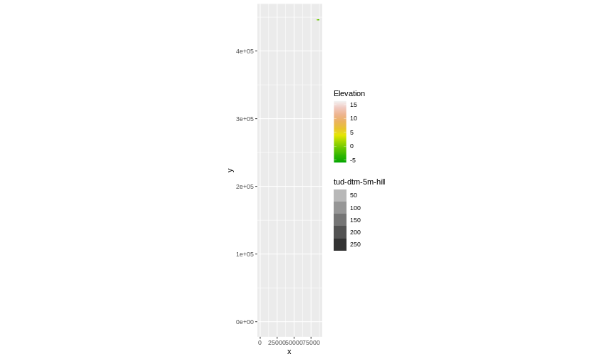

Content from Introduction to R and RStudio
Last updated on 2025-05-13 | Edit this page
Estimated time: 50 minutes
Overview
Questions
- How can I find my way around RStudio?
- How can I manage projects in R?
- How can I install packages?
- How can I interact with R?
Objectives
After completing this episode, participants should be able to…
- Create self-contained projects in RStudio
- Install additional packages using R code.
- Manage packages
- Define a variable
- Assign data to a variable
- Call functions
Project management in RStudio
RStudio is an integrated development environment (IDE), which means it provides a (much prettier) interface for the R software. For RStudio to work, you need to have R installed on your computer. But R is integrated into RStudio, so you never actually have to open R software.
RStudio provides a useful feature: creating projects - self-contained working space (i.e. working directory), to which R will refer to, when looking for and saving files. You can create projects in existing directories (folders) or create a new one.
Creating RStudio Project
We’re going to create a project in RStudio in a new directory. To create a project, go to:
FileNew ProjectNew directory- Place the project that you will easily find on your laptop and name
the project
data-carpentry Create project
Organising working directory
Creating an RStudio project is a good first step towards good project management. However, most of the time it is a good idea to organize working space further. This is one suggestion of how your R project can look like. Let’s go ahead and create the other folders:
-
data/- should be where your raw data is. READ ONLY -
data_output/- should be where your data output is saved READ AND WRITE -
documents/- all the documentation associated with the project (e.g. cookbook) -
fig_output/- your figure outputs go here WRITE ONLY -
scripts/- all your code goes here READ AND WRITE

You can create these folders as you would any other folders on your laptop, but R and RStudio offer handy ways to do it directly in your RStudio session.
You can use RStudio interface to create a folder in your project by going to lower-bottom pane, files tab, and clicking on Folder icon. A dialog box will appear, allowing you typing a name of a folder you want to create.
An alternative solution is to create the folders using R command
dir.create(). In the console type:
R
dir.create("data")
dir.create("data_output")
dir.create("documents")
dir.create("fig_output")
dir.create("scripts")
In interest of time, focus on one way of creating the folders. You can showcase an alternative method with just one example.
Once you have finished, ask the participants if they have managed to create a R Project and get the same folder structure. To do this, use green and red stickers.
This will become important, as we use relative paths together with
here package to read and write objects.
Two main ways to interact with R
There are two main ways to interact with R through RStudio:
- test and play environment within the interactive R console
- write and save an R script (
.Rfile)
Callout
When you open the RStudio or create the Rstudio project, you will see Console window on the left by default. Once you create an R script, it is placed in the upper left pane. The Console is moved to the bottom left pane.
Each of the modes o interactions has its advantages and drawbacks.
| Console | R script | |
|---|---|---|
| Pros | Immediate results | Complete record of your work |
| Cons | Work lost once you close RStudio | Messy if you just want to print things out |
Creating a script
During the workshop we will mostly use an .R script to
have a full documentation of what has been written. This way we will
also be able to reproduce the results. Let’s create one now and save it
in the scripts directory.
FileNew FileR Script- A new
Untitledscript will appear in the source pane. - Save it using floppy disc icon.
- Select the
scripts/folder as the file location - Name the script
intro-to-r.R
Running the code
Note that all code written in the script can be also executed at a
spot in the
interactive console. We will now learn how to run the code both in the
console and the script.
- In the Console you run the code by hitting Enter at the end of the line
- In the R script there are two way to execute the code:
- You can use the
Runbutton on the top right of the script window. - Alternatively, you can use a keyboard shortcut: Ctrl + Enter or Command + Return for MAC users.
- You can use the
In both cases, the active line (the line where your cursor is placed) or a highlighted snippet of code will be executed. A common source of error in scripts, such as a previously created object not found, is code that has not been executed in previous lines: make sure that all code has been executed as described above. To run all lines before the active line, you can use the keyboard shortcut Ctrl + Alt + B on Windows/Linux or Command + option + B on Mac.
Packages
A great power of R lays in packages: add-on sets of
functions that are build by the community and once they go
through a quality process they are available to download from a
repository called CRAN. They need to be explicitly
activated. Now, we will be using tidyverse package, which
is actually a collection of useful packages. Another package that we
will use is here.
You were asked to install tidyverse package in the
preparation for the workshop. You need to install a package only once,
so you won’t have to do it again. We will however need to install the
here package. To do so, please go to your script and
type:
R
install.packages("here")
Callout
If you are not sure if you have tidyverse packaged
installed, you can check it in the Packages tab in the
bottom right pane. In the search box start typing
‘tidyverse’ and see if it appears in the list of installed
packages. If not, you will need to install it by writing in the
script:
R
install.packages('tidyverse')
Commenting your code
Now we have a bit of an issue with our script. As mentioned, the
packages need to be installed only once, but now, they will be installed
each time we run the script, which can take a lot of time if we’re
installing a large package like tidyverse.
To keep a trace of you installing the packages, without executing it,
you can use a comment. In R, anything that is written after
a has sign #, is ignored in execution. Thanks to this
feature, you can annotate your code. Let’s adapt our script by changing
the first lines into comments:
R
# install.packages('here')
# install.packages('tidyverse')
Installing packages is not sufficient to work with them. You will
need to load them each time you want to use them. To do that you use
library() command:
R
# Load packages
library(tidyverse)
library(here)
Handling paths
You have created a project which is your working directory, and a few
sub-folders, that will help you organise your project better. But now,
each time you will save or retrieve a file from those folders, you will
need to specify the path from the folder you are in (most likely the
scripts/ folder) to those files.
That can become complicated and might cause a reproducibility problem, if the person using your code (including future you) is working in a different sub-folder.
We will use the here() package to tackle this issue.
This package converts relative paths from the root (main folder) of your
project to absolute paths (the exact location on your computer). For
instance, instead of writing out the full path like
“C:/Users/YourName/Documents/r-geospatial-urban/data/file.csv” or
“~/Documents/r-geospatial-urban/data/file.csv”, you can use the
here() function to create a path relative to your project’s
main directory. This makes your code more portable and reproducible, as
it doesn’t depend on a specific location of your project on your
computer.
It might be confusing, so let’s see how it works. We will use the
here() function from the here package. In the
console, we write:
R
here()
here('data')
You all probably have something different printed out. And this is
fine, because here adapts to your computer’s specific
situation.
Download files
We still need to download data for the first part of the workshop.
You can do it with the function download.file(). We will
save it in the data/ folder, where the raw
data should go. In the script, we will write:
R
# Download the data
download.file(
"https://bit.ly/geospatial_data",
here("data", "gapminder_data.csv")
)
The data we just downloaded is data about country statistics, containing information on, for instance, GDP and life-expectancy. We will work with this data later in the lesson
Importing data into R
Three of the most common ways of importing data in R are:
- loading a package with pre-installed data;
- downloading data from a URL;
- reading a file from your computer.
For larger datasets, database connections or API requests are also possible. We will not cover these in the workshop.
Introduction to R
You can use R as calculator, you can for example write:
R
1 + 100
1 * 100
1 / 100
Variables and assignment
However, what’s more useful is that in R we can store values and use
them whenever we need to. We using the assignment operator
<-, like this:
R
x <- 1 / 40
Notice that assignment does not print a value. Instead, we’ve stored
it for later in something called a variable. x variable now
contains the value 0.025:
R
x
Look for the Environment tab in the upper right pane of
RStudio. You will see that x and its value have appeared in
the list of Values. Our variable x can be used in place of
a number in any calculation that expects a number, e.g. when calculating
a square root:
R
sqrt(x)
Variables can be also reassigned. This means that we can assign a new
value to variable x:
R
x <- 100
x
You can use one variable to create a new one:
R
y <- sqrt(x) # you can use value stored in object x to create y
y
Key Points
- Use RStudio to write and run R programs.
- Use
install.packages()to install packages. - Use
library()to load packages.
Content from Data Structures
Last updated on 2025-05-13 | Edit this page
Estimated time: 12 minutes
Overview
Questions
- What are the basic data types in R?
- How do I represent categorical information in R?
Objectives
After completing this episode, participants should be able to…
- To be aware of the different types of data.
- To begin exploring data frames, and understand how they are related to vectors, factors and lists.
- To be able to ask questions from R about the type, class, and structure of an object.
Vectors
So far we’ve looked at individual values, such as x <- 100. Now we will move to a data structure called vectors. Vectors are arrays of values of the same data type. So now we combine multiple values into one object: x <- c(100, 200)
Data types
Data type refers to a type of information that is stored by a value. It can be:
-
numerical(a number) -
integer(a number without information about decimal points) -
logical(a boolean - are values TRUE or FALSE?) -
character(a text/ string of characters) -
complex(a complex number) -
raw(raw bytes)
We won’t discuss complex or raw data type
in the workshop.
Data structures
Vectors are the most common and basic data structure in R but you will come across other data structures such as data frames, lists and matrices as well. In short:
- data.frames is a two-dimensional data structure in which columns are vectors of the same length that can have different data types. We will use this data structure in this lesson.
- lists can have an arbitrary structure and can mix data types;
- matrices are two-dimensional data structures containing elements of the same data type.
For a more detailed description, see Data Types and Structures.
Note that vector data in the geospatial context is different from vector data types. More about vector data in a later lesson!
You can create a vector with a c() function.
You can inspect vectors with the str() function. In
factor vectors, it shows the underlying values of each category. You can
also see the structure in the environment tab of RStudio.
R
# vector of numbers - numeric data type.
numeric_vector <- c(2, 6, 3)
numeric_vector
OUTPUT
[1] 2 6 3R
str(numeric_vector)
OUTPUT
num [1:3] 2 6 3R
# vector of words - or strings of characters- character data type. Note that we need to use quotation marks '' to tell R that we are working with strings. If there is a ' mark in the string itself, such as s'Gravenhage, then we use "".
character_vector <- c('Amsterdam', "'s Gravenhage", 'Delft')
character_vector
OUTPUT
[1] "Amsterdam" "'s Gravenhage" "Delft" R
str(character_vector)
OUTPUT
chr [1:3] "Amsterdam" "'s Gravenhage" "Delft"R
# vector of logical values (is something true or false?)- logical data type.
logical_vector <- c(TRUE, FALSE, TRUE)
logical_vector
OUTPUT
[1] TRUE FALSE TRUER
str(logical_vector)
OUTPUT
logi [1:3] TRUE FALSE TRUECombining vectors
The combine function, c(), will also append things to an
existing vector:
R
ab_vector <- c('a', 'b')
ab_vector
OUTPUT
[1] "a" "b"R
abcd_vector <- c(ab_vector, 'c', 'd')
abcd_vector
OUTPUT
[1] "a" "b" "c" "d"Missing values
Challenge: combining vectors
Combine the abcd_vector with the
numeric_vector in R. What is the data type of this new
vector and why?
combined_vector <- c(abcd_vector, numeric_vector)
combined_vector
str(combined_vector)The combined vector is a character vector. Because vectors can only
hold one data type and abcd_vector cannot be interpreted as
numbers, the numbers in numeric_vector are coerced
into characters.
A common operation you want to perform is to remove all the missing
values (in R denoted as NA). Let’s have a look how to do
it:
R
with_na <- c(1, 2, 1, 1, NA, 3, NA ) # vector including missing value
First, let’s try to calculate mean for the values in this vector
R
mean(with_na) # mean() function cannot interpret the missing values
OUTPUT
[1] NAR
# You can add the argument na.rm=TRUE to calculate the result while
# ignoring the missing values.
mean(with_na, na.rm = T)
OUTPUT
[1] 1.6However, sometimes, you would like to have the NA
permanently removed from your vector. For this you need to identify
which elements of the vector hold missing values with
is.na() function.
R
is.na(with_na) # This will produce a vector of logical values,
OUTPUT
[1] FALSE FALSE FALSE FALSE TRUE FALSE TRUER
# stating if a statement 'This element of the vector is a missing value'
# is true or not
# to see how many values are missing in our with_na vector, we can use the sum function
sum(is.na(with_na))
OUTPUT
[1] 2R
# to identify the values that are not missing we write the following
!is.na(with_na) # The ! operator means negation, i.e. not is.na(with_na)
OUTPUT
[1] TRUE TRUE TRUE TRUE FALSE TRUE FALSER
#and to sum all the non-missing values we write
sum(!is.na(with_na))
OUTPUT
[1] 5We know which elements in the vectors are NA. Now we
need to retrieve the subset of the with_na vector that is
not NA. Sub-setting in R is done with square
brackets[ ].
R
without_na <- with_na[ !is.na(with_na) ] # this notation will return only
# the elements that have TRUE on their respective positions
without_na
OUTPUT
[1] 1 2 1 1 3Factors
Another important data structure is called a factor. Factors look like character data, but are used to represent categorical information.
Factors create a structured relation between the different levels
(values) of a categorical variable, such as days of the week or
responses to a question in a survey. While factors look (and often
behave) like character vectors, they are actually treated as numbers by
R, which is useful for computing summary statistics about
their distribution, running regression analysis, etc. So you need to be
very careful when treating them as strings.
Create factors
Once created, factors can only contain a pre-defined set of values, known as levels.
R
nordic_str <- c('Norway', 'Sweden', 'Norway', 'Denmark', 'Sweden')
nordic_str # regular character vectors printed out
OUTPUT
[1] "Norway" "Sweden" "Norway" "Denmark" "Sweden" R
# factor() function converts a vector to factor data type
nordic_cat <- factor(nordic_str)
nordic_cat # With factors, R prints out additional information - 'Levels'
OUTPUT
[1] Norway Sweden Norway Denmark Sweden
Levels: Denmark Norway SwedenR
nordic_cat
OUTPUT
[1] Norway Sweden Norway Denmark Sweden
Levels: Denmark Norway SwedenR
str(nordic_cat)
OUTPUT
Factor w/ 3 levels "Denmark","Norway",..: 2 3 2 1 3Inspect factors
R will treat each unique value from a factor vector as a level and (silently) assign numerical values to it. This can come in handy when performing statistical analysis. You can inspect and adapt levels of the factor.
R
levels(nordic_cat) # returns all levels of a factor vector.
OUTPUT
[1] "Denmark" "Norway" "Sweden" R
nlevels(nordic_cat) # returns number of levels in a vector
OUTPUT
[1] 3Reorder levels
Note that R sorts the levels in the alphabetic order,
not in the order of occurrence in the vector. R assigns
value of:
- 1 to level ‘Denmark’,
- 2 to ‘Norway’
- 3 to ‘Sweden’.
This is important as it can affect e.g. the order in which categories are displayed in a plot or which category is taken as a baseline in a statistical model.
You can reorder the categories using factor() function.
This can be useful, for instance, to select a reference category (first
level) in a regression model or for ordering legend items in a plot,
rather than using the default category systematically (i.e. based on
alphabetical order).
R
nordic_cat <- factor(
nordic_cat,
levels = c(
"Norway",
"Denmark",
"Sweden"
)
)
# now Norway will be the first category, Denmark second and Sweden third
nordic_cat
OUTPUT
[1] Norway Sweden Norway Denmark Sweden
Levels: Norway Denmark SwedenCallout
There is more than one way to reorder factors. Later in the lesson,
we will use fct_relevel() function from
forcats package to do the reordering.
R
library(forcats)
nordic_cat <- fct_relevel(
nordic_cat,
"Norway",
"Denmark",
"Sweden"
) # With this, Norway will be first category,
# Denmark second and Sweden third
nordic_cat
OUTPUT
[1] Norway Sweden Norway Denmark Sweden
Levels: Norway Denmark SwedenNote of caution
Remember that once created, factors can only contain a pre-defined
set of values, known as levels. It means that whenever you try to add
something to the factor outside of this set, it will become an
unknown/missing value detonated by R as
NA.
R
nordic_str
OUTPUT
[1] "Norway" "Sweden" "Norway" "Denmark" "Sweden" R
nordic_cat2 <- factor(
nordic_str,
levels = c("Norway", "Denmark")
)
# because we did not include Sweden in the list of
# factor levels, it has become NA.
nordic_cat2
OUTPUT
[1] Norway <NA> Norway Denmark <NA>
Levels: Norway DenmarkKey Points
- The mostly used basic data types in R are
numeric,integer,logical, andcharacter - Use factors to represent categories in R.
Content from Exploring Data Frames & Data frame Manipulation with dplyr
Last updated on 2025-05-13 | Edit this page
Estimated time: 12 minutes
Overview
Questions
- What is a data frame?
- How can I read data in R?
- How can I get basic summary information about my data set?
- How can I select specific rows and/or columns from a data frame?
- How can I combine multiple commands into a single command?
- How can I create new columns or remove existing columns from a data frame?
Objectives
After completing this episode, participants should be able to…
- Describe what a data frame is.
- Load external data from a .csv file into a data frame.
- Summarize the contents of a data frame.
- Select certain columns in a data frame with the dplyr function select.
- Select certain rows in a data frame according to filtering conditions with the dplyr function filter.
- Link the output of one dplyr function to the input of another function with the ‘pipe’ operator %>%.
- Add new columns to a data frame that are functions of existing columns with mutate.
- Use the split-apply-combine concept for data analysis.
- Use summarize, group_by, and count to split a data frame into groups of observations, apply a summary statistics for each group, and then combine the results.
Exploring Data frames
Now we turn to the bread-and-butter of working with R:
working with tabular data. In R data are stored in a data
structure called data frames.
A data frame is a representation of data in the format of a table where the columns are vectors that all have the same length.
Because columns are vectors, each column must contain a single type of data (e.g., characters, numeric, factors). For example, here is a figure depicting a data frame comprising a numeric, a character, and a logical vector.

Source: Data
Carpentry R for Social Scientists
Reading data
read.csv() is a function used to read coma separated
data files (.csv format)). There are other functions for
files separated with other delimiters. We’re gonna read in the
gapminder data set with information about countries’ size,
GDP and average life expectancy in different years.
R
gapminder <- read.csv("data/gapminder_data.csv")
Exploring dataset
Let’s investigate the gapminder data frame a bit; the
first thing we should always do is check out what the data looks
like.
It is important to see if all the variables (columns) have the data type that we require. For instance, a column might have numbers stored as characters, which would not allow us to make calculations with those numbers.
R
str(gapminder)
OUTPUT
'data.frame': 1704 obs. of 6 variables:
$ country : chr "Afghanistan" "Afghanistan" "Afghanistan" "Afghanistan" ...
$ year : int 1952 1957 1962 1967 1972 1977 1982 1987 1992 1997 ...
$ pop : num 8425333 9240934 10267083 11537966 13079460 ...
$ continent: chr "Asia" "Asia" "Asia" "Asia" ...
$ lifeExp : num 28.8 30.3 32 34 36.1 ...
$ gdpPercap: num 779 821 853 836 740 ...We can see that the gapminder object is a data.frame
with 1704 observations (rows) and 6 variables (columns).
In each line after a $ sign, we see the name of each
column, its type and first few values.
First look at the dataset
There are multiple ways to explore a data set. Here are just a few examples:
R
head(gapminder) # shows first 6 rows of the data set
OUTPUT
country year pop continent lifeExp gdpPercap
1 Afghanistan 1952 8425333 Asia 28.801 779.4453
2 Afghanistan 1957 9240934 Asia 30.332 820.8530
3 Afghanistan 1962 10267083 Asia 31.997 853.1007
4 Afghanistan 1967 11537966 Asia 34.020 836.1971
5 Afghanistan 1972 13079460 Asia 36.088 739.9811
6 Afghanistan 1977 14880372 Asia 38.438 786.1134R
summary(gapminder) # basic statistical information about each column.
OUTPUT
country year pop continent
Length:1704 Min. :1952 Min. :6.001e+04 Length:1704
Class :character 1st Qu.:1966 1st Qu.:2.794e+06 Class :character
Mode :character Median :1980 Median :7.024e+06 Mode :character
Mean :1980 Mean :2.960e+07
3rd Qu.:1993 3rd Qu.:1.959e+07
Max. :2007 Max. :1.319e+09
lifeExp gdpPercap
Min. :23.60 Min. : 241.2
1st Qu.:48.20 1st Qu.: 1202.1
Median :60.71 Median : 3531.8
Mean :59.47 Mean : 7215.3
3rd Qu.:70.85 3rd Qu.: 9325.5
Max. :82.60 Max. :113523.1 R
# Information format differes by data type.
nrow(gapminder) # returns number of rows in a dataset
OUTPUT
[1] 1704R
ncol(gapminder) # returns number of columns in a dataset
OUTPUT
[1] 6Dollar sign ($)
When you’re analyzing a data set, you often need to access its specific columns.
One handy way to access a column is using it’s name and a dollar sign
$:
R
# This notation means: From dataset gapminder, give me column country. You can
# see that the column accessed in this way is just a vector of characters.
country_vec <- gapminder$country
head(country_vec)
OUTPUT
[1] "Afghanistan" "Afghanistan" "Afghanistan" "Afghanistan" "Afghanistan"
[6] "Afghanistan"Note that the calling a column with a $ sign will return
a vector, it’s not a data frame anymore.
Data frame Manipulation with dplyr
Select
Let’s start manipulating the data.
First, we will adapt our data set, by keeping only the columns we’re
interested in, using the select() function from the
dplyr package:
R
year_country_gdp <- select(gapminder, year, country, gdpPercap)
head(year_country_gdp)
OUTPUT
year country gdpPercap
1 1952 Afghanistan 779.4453
2 1957 Afghanistan 820.8530
3 1962 Afghanistan 853.1007
4 1967 Afghanistan 836.1971
5 1972 Afghanistan 739.9811
6 1977 Afghanistan 786.1134Pipe
Now, this is not the most common notation when working with
dplyr package. dplyr offers an operator
%>% called a pipe, which allows you build up very
complicated commands in a readable way.
In newer installation of R you can also find a notation
|> . This pipe works in a similar way. The main
difference is that you don’t need to load any packages to have it
available.
The select() statement with pipe would look like
that:
R
year_country_gdp <- gapminder %>%
select(year, country, gdpPercap)
head(year_country_gdp)
OUTPUT
year country gdpPercap
1 1952 Afghanistan 779.4453
2 1957 Afghanistan 820.8530
3 1962 Afghanistan 853.1007
4 1967 Afghanistan 836.1971
5 1972 Afghanistan 739.9811
6 1977 Afghanistan 786.1134First we define data set, then - with the use of pipe we pass it on
to the select() function. This way we can chain multiple
functions together, which we will be doing now.
Filter
We already know how to select only the needed columns. But now, we
also want to filter the rows of our data set via certain conditions with
filter() function. Instead of doing it in separate steps,
we can do it all together.
In the gapminder data set, we want to see the results
from outside of Europe for the 21st century.
R
year_country_gdp_euro <- gapminder %>%
filter(continent != "Europe" & year >= 2000) %>%
select(year, country, gdpPercap)
# '&' operator (AND) - both conditions must be met
head(year_country_gdp_euro)
OUTPUT
year country gdpPercap
1 2002 Afghanistan 726.7341
2 2007 Afghanistan 974.5803
3 2002 Algeria 5288.0404
4 2007 Algeria 6223.3675
5 2002 Angola 2773.2873
6 2007 Angola 4797.2313Challenge: filtered data frame
Write a single command (which can span multiple lines and includes pipes) that will produce a data frame that has the values for life expectancy, country and year, only for Eurasia. How many rows does your data frame have and why?
R BG-INFO
year_country_gdp_eurasia <- gapminder %>%
filter(continent == "Europe" | continent == "Asia") %>%
select(year, country, gdpPercap)
# '|' operator (OR) - one of the conditions must be met
nrow(year_country_gdp_eurasia)
OUTPUT
[1] 756Group and summarize
So far, we have provided summary statistics on the whole dataset, selected columns, and filtered the observations. But often instead of doing that, we would like to know statistics about all of the continents, presented by group.
R
gapminder %>% # select the dataset
group_by(continent) %>% # group by continent
summarize(avg_gdpPercap = mean(gdpPercap)) # create basic stats
OUTPUT
# A tibble: 5 × 2
continent avg_gdpPercap
<chr> <dbl>
1 Africa 2194.
2 Americas 7136.
3 Asia 7902.
4 Europe 14469.
5 Oceania 18622.Challenge: longest and shortest life expectancy
Calculate the average life expectancy per country. Which country has the longest average life expectancy and which has the shortest average life expectancy?
Hint Use max() and min()
functions to find minimum and maximum.
R BG-INFO
gapminder %>%
group_by(country) %>%
summarize(avg_lifeExp = mean(lifeExp)) %>%
filter(avg_lifeExp == min(avg_lifeExp) |
avg_lifeExp == max(avg_lifeExp))
OUTPUT
# A tibble: 2 × 2
country avg_lifeExp
<chr> <dbl>
1 Iceland 76.5
2 Sierra Leone 36.8Multiple groups and summary variables
You can also group by multiple columns:
R
gapminder %>%
group_by(continent, year) %>%
summarize(avg_gdpPercap = mean(gdpPercap))
OUTPUT
# A tibble: 60 × 3
# Groups: continent [5]
continent year avg_gdpPercap
<chr> <int> <dbl>
1 Africa 1952 1253.
2 Africa 1957 1385.
3 Africa 1962 1598.
4 Africa 1967 2050.
5 Africa 1972 2340.
6 Africa 1977 2586.
7 Africa 1982 2482.
8 Africa 1987 2283.
9 Africa 1992 2282.
10 Africa 1997 2379.
# ℹ 50 more rowsOn top of this, you can also make multiple summaries of those groups:
R
gdp_pop_bycontinents_byyear <- gapminder %>%
group_by(continent, year) %>%
summarize(
avg_gdpPercap = mean(gdpPercap),
sd_gdpPercap = sd(gdpPercap),
avg_pop = mean(pop),
sd_pop = sd(pop),
n_obs = n()
)
Frequencies
If you need only a number of observations per group, you can use the
count() function
R
gapminder %>%
group_by(continent) %>%
count()
OUTPUT
# A tibble: 5 × 2
# Groups: continent [5]
continent n
<chr> <int>
1 Africa 624
2 Americas 300
3 Asia 396
4 Europe 360
5 Oceania 24Mutate
Frequently you’ll want to create new columns based on the values in
existing columns. For example, instead of only having the GDP per
capita, we might want to create a new GDP variable and convert its units
into Billions. For this, we’ll use mutate().
R
gapminder_gdp <- gapminder %>%
mutate(gdpBillion = gdpPercap * pop / 10^9)
head(gapminder_gdp)
OUTPUT
country year pop continent lifeExp gdpPercap gdpBillion
1 Afghanistan 1952 8425333 Asia 28.801 779.4453 6.567086
2 Afghanistan 1957 9240934 Asia 30.332 820.8530 7.585449
3 Afghanistan 1962 10267083 Asia 31.997 853.1007 8.758856
4 Afghanistan 1967 11537966 Asia 34.020 836.1971 9.648014
5 Afghanistan 1972 13079460 Asia 36.088 739.9811 9.678553
6 Afghanistan 1977 14880372 Asia 38.438 786.1134 11.697659Key Points
- We can use the
select()andfilter()functions to select certain columns in a data frame and to subset it based a specific conditions. - With
mutate(), we can create new columns in a data frame with values based on existing columns. - By combining
group_by()andsummarize()in a pipe (%>%) chain, we can generate summary statistics for each group in a data frame.
Content from Introduction to visualisation
Last updated on 2025-05-13 | Edit this page
Estimated time: 12 minutes
Overview
Questions
- How can I create a basic plot in R?
- How can I add features to a plot?
- How can I get basic summary information about my data set?
- How can I include addition information via a colours palette.
- How can I find more information about a function and its arguments?
- How can I create new columns or remove existing columns from a data frame?
Objectives
After completing this episode, participants should be able to…
- Generate plots to visualise data with
ggplot2. - Add plot layers to incrementally build a more complex plot.
- Use the
fillargument for colouring surfaces, and modify colours with the viridis or scale_manual packages. - Explore the help documentation.
- Save and format your plot via the
ggsave()function.
Introduction to Visualisation
The package ggplot2 is a powerful plotting system. We
will start with an introduction of key features of ggplot2.
gg stands for grammar of graphics. The idea idea behind it
is that the following three components are needed to create a graph:
- data,
- aesthetics - a coordinate system on which we map the data (what is represented on x axis, what on y axis), and
- geometries - visual representation of the data (points, bars, etc.)
A fun part about ggplot2 is that you can add layers to
the plot to provide more information and to make it more beautiful.
In the following parts of this workshop, you will use this package to visualize geospatial data. First, make sure that you have the following packages loaded.
R
library(tidyverse)
library(terra)
Now, lets plot the distribution of life expectancy in the
gapminder dataset:
R
ggplot(
data = gapminder, # data
aes(x = lifeExp) # aesthetics layer
) +
geom_histogram() # geometry layer

You can see that in ggplot you use + as a
pipe, to add layers. Within the ggplot() call, it is the
only pipe that will work. But, it is possible to chain operations on a
data set with a pipe that we have already learned: %>% (
or |>) and follow them by ggplot syntax.
Let’s create another plot, this time only on a subset of observations:
R
gapminder %>% # we select a data set
filter(year == 2007 & continent == "Americas") %>% # filter to keep one year and one continent
ggplot(aes(x = country, y = gdpPercap)) + # the x and y axes represent values of columns
geom_col() # we select a column graph as a geometry

Now, you can iteratively improve how the plot looks like. For example, you might want to flip it, to better display the labels.
R
gapminder %>%
filter(
year == 2007,
continent == "Americas"
) %>%
ggplot(aes(x = country, y = gdpPercap)) +
geom_col() +
coord_flip() # flip axes
One thing you might want to change here is the order in which countries are displayed. It would be easier to compare GDP per capita, if they were showed in order. To do that, we need to reorder factor levels (you remember, we’ve already done this before).
Now the order of the levels will depend on another variable - GDP per capita.
R
gapminder %>%
filter(
year == 2007,
continent == "Americas"
) %>%
mutate(country = fct_reorder(country, gdpPercap)) %>% # reorder factor levels
ggplot(aes(x = country, y = gdpPercap)) +
geom_col() +
coord_flip()

Let’s make things more colourful - let’s represent the average life expectancy of a country by colour
R
gapminder %>%
filter(
year == 2007,
continent == "Americas"
) %>%
mutate(country = fct_reorder(country, gdpPercap)) %>%
ggplot(aes(
x = country,
y = gdpPercap,
fill = lifeExp # use 'fill' for surfaces; 'colour' for points and lines
)) +
geom_col() +
coord_flip()
We can also adapt the colour scale. Common choice that is used for
its readability and colorblind-proofness are the palettes available in
the viridis package.
R
gapminder %>%
filter(
year == 2007,
continent == "Americas"
) %>%
mutate(country = fct_reorder(country, gdpPercap)) %>%
ggplot(aes(x = country, y = gdpPercap, fill = lifeExp)) +
geom_col() +
coord_flip() +
scale_fill_viridis_c() # _c stands for continuous scale
Maybe we don’t need that much information about the life expectancy.
We only want to know if it’s below or above average. We will make use of
the if_else() function inside mutate() to
create a new column lifeExpCat with the value
high if life expectancy is above average and
low otherwise. Note the usage of the if_else()
function:
if_else(<condition>, <value if TRUE>, <value if FALSE>).
R
p <- # this time let's save the plot in an object
gapminder %>%
filter(year == 2007 &
continent == "Americas") %>%
mutate(
country = fct_reorder(country, gdpPercap),
lifeExpCat = if_else(
lifeExp >= mean(lifeExp),
"high",
"low"
)
) %>%
ggplot(aes(x = country, y = gdpPercap, fill = lifeExpCat)) +
geom_col() +
coord_flip() +
scale_fill_manual(
values = c(
"light blue",
"orange"
) # customize the colors
)
Since we saved a plot as an object p, nothing has been
printed out. Just like with any other object in R, if you
want to see it, you need to call it.
R
p

Now we can make use of the saved object and add things to it.
Let’s also give it a title and name the axes:
R
p <- p +
ggtitle("GDP per capita in Americas", subtitle = "Year 2007") +
xlab("Country") +
ylab("GDP per capita")
# show plot
p

Writing data
Saving the plot
Once we are happy with our plot we can save it in a format of our choice. Remember to save it in the dedicated folder.
R
ggsave(
plot = p,
filename = here("fig_output", "plot_americas_2007.pdf")
)
# By default, ggsave() saves the last displayed plot, but
# you can also explicitly name the plot you want to save
Using help documentation
My saved plot is not very readable. We can see why it happened by exploring the help documentation. We can do that by writing directly in the console:
R
?ggsave
We can read that it uses the “size of the current graphics device”.
That would explain why our saved plots look slightly different. Feel
free to explore the documentation to see how to adapt the size e.g. by
adapting width, height and units
parameter.
Saving the data
Another output of your work you want to save is a cleaned data set. In your analysis, you can then load directly that data set. Let’s say we want to save the data only for Americas:
R
gapminder_amr_2007 <- gapminder %>%
filter(year == 2007 & continent == "Americas") %>%
mutate(
country_reordered = fct_reorder(country, gdpPercap),
lifeExpCat = if_else(lifeExp >= mean(lifeExp), "high", "low")
)
write.csv(gapminder_amr_2007,
here("data_output", "gapminder_americas_2007.csv"),
row.names = FALSE
)
Key Points
- With
ggplot2, we use the+operator to combine plot layers and incrementally build a more complex plot. - In the aesthetics (
aes()), we can assign variables to the x and y axes and use thefillargument for colouring surfaces. - With
scale_fill_viridis_c()andscale_fill_manual()we can assign new colours to our plot. - To open the help documentation for a function, we run the name of
the function preceded by the
?sign.
Content from Introduction to Geospatial Concepts
Last updated on 2025-05-13 | Edit this page
Estimated time: 12 minutes
Overview
Questions
- How do I describe the location of a geographic feature on the surface of the earth?
- What is a coordinate reference system (CRS) and how do I describe different types of CRS?
- How do I decide on what CRS to use?
Objectives
After completing this episode, participants should be able to…
- Identify the CRS that is best fit for a specific research question.
The shape of the Earth
The shape of the Earth is approximately a sphere which is slightly wider than it is tall, and which is called ellipsoid. The true shape of the Earth is an irregular ellipsoid, the so-called geoid, as illustrated in the image below.

The most common and basic representation of the position of points on the Earth is the combination of the geographical latitude and longitude, as shown below.

Meridians are vertical circles with constant longitude, called great circles, which run from the North Pole to the South Pole. Parallels are horizontal circles with constant latitude, which are called small circles. Only the equator (the largest parallel) is also a great circle.
The black lines in the figure above show the equator and the prime meridian running through Greenwich, with latitude and longitude labels. The red dotted lines show the meridian and parallel running through Karachi, Pakistan (25°45’N, 67°01’E).
Map projection: From the 3D Earth to a 2D map
Map projection is a systematic transformation of the latitudes and longitudes of locations on the surface of an ellipsoid into locations on a plane. It is a transformation of the three-dimensional Earth’s surface into its two-dimensional representation on a sheet of paper or computer screen (see the image below for a comparison with flattening an orange peel).

Many different map projections are in use for different purposes. Generally, they can be categorised into the following groups: cylindrical, conic, and azimuthal.

Each map projection introduces a distortion in geometrical elements – distance, angle, and area. Depending on which of these geometrical elements are more relevant for a specific map, we can choose an appropriate map projection. Conformal projections are the best for preserving angles between any two curves, which means preserving the correct shapes of small areas; equal area (equivalent) projections preserve the area or scale; equal distance (conventional) projections are the best for preserving distances.
Coordinate reference systems (CRS)
A coordinate reference system (CRS) is a coordinate-based local, regional or global system for locating geographical entities, which uses a specific map projection. It defines how the two-dimensional, projected map relates to real places on the Earth.
All coordinate reference systems are included in a public registry called the EPSG Geodetic Parameter Dataset (EPSG registry), initiated in 1985 by a member of the European Petroleum Survey Group (EPSG). Each CRS has a unique EPSG code, which makes it possible to easily identify them among the large number of CRS. This is particularly important for transforming spatial data from one CRS to another.
Some of the most commonly used CRS in the Netherlands are the following:
- World Geodetic System 1984 (WGS84) is the best known global reference system (EPSG:4326).
- European Terrestrial Reference System 1989 (ETRS89) is the standard coordinate system for Europe (EPSG:4258).
- The most popular projected CRS in the Netherlands is ‘Stelsel van de Rijksdriehoeksmeting (RD)’ registered in EPSG as ‘Amersfoort / RD New’ (EPSG:28992).
The main parameters of each CRS are the following:
- Datum is a model of the shape of the Earth, which specifies how a coordinate system is linked to the Earth, e.g. how to define the origin of the coordinate axis – where (0,0) is. It has angular units (degrees).
- Projection is mathematical transformation of the angular measurements on the Earth to linear units (e.g. meters) on a flat surface (paper or a computer screen).
- Additional parameters, such as a definition of the centre of the map, are often necessary to create the full CRS.
If you work with data for the Netherlands, you will most likely encounter the two CRS shown in the table below, namely the WGS 84 and Amersfoort / RD New. While WGS 84 is used for data for countries worldwide (for example, for OpenStreetMap data), Amersfoort / RD New is a Dutch local CRS. For other countries, other local CRS are available.
| WGS 84 (EPSG:4326) | Amersfoort / RD New (EPSG:28992) | |
|---|---|---|
| Definition | Dynamic (relies on a datum which is not plate-fixed) | Static (relies on a datum which is plate-fixed) |
| Celestial body | Earth | Earth |
| Ellipsoid | WGS-84 | Bessel 1841 |
| Prime meridian | International Reference Meridian | Greenwich |
| Datum | World Geodetic System 1984 ensemble | Amersfoort |
| Projection | Geographic (uses latitude and longitude for coordinates) | Projected (uses meters for coordinates) |
| Method | Lat/long (Geodetic alias) | Oblique Stereographic Alternative |
| Units | Degrees | Meters |
The figure below shows the same city (Rotterdam) in these two CRS.

In addition to using different CRS, these two maps of Rotterdam also have different scales.
Map scale
Map scale measures the ratio between distance on a map and the corresponding distance on the ground. For example, on a 1:100 000 scale map, 1cm on the map equals 1km (100 000 cm) on the ground. Map scale can be expressed in the following three ways:
| Verbal: | 1 centimetre represents 250 meters |
| Fraction: | 1:25000 |
| Graphic: |  |
Callout
Note that the maps presented in this lesson do not use a scale bar. Instead, plot axes will serve that purpose.
Types of geospatial data
The map of Rotterdam in the figure above shows the area of the city as a discrete feature with precise boundaries. This type of data is called vector. Vector data can have the form of points, lines and polygons (areas).

We can also represent geographical features on the Earth as continuous phenomena and images of the Earth. This type of data is called raster. The figure below shows the two types of geospatial data which can be used to represent the real world, namely vector and raster.

Disambiguating vectors
Vector data in geospatial analysis is not the same as vectors in R. In R, vectors are one-dimensional arrays of elements of the same type, while geospatial vector data is a type of data that represents discrete features with precise boundaries.
Challenge: CRS for calculating areas
You want to investigate which European country has the largest urban area. Which CRS will you use?
- EPSG:4326
- EPSG:28992
- EPSG:3035
Hint: Go to https://epsg.io/ or https://epsg.org/search/by-name and check properties of the given CRS, such as datum, type of map projection, units of measure etc.
Correct answer: c. EPSG:3035
Challenge: CRS for calculating shortest paths
You want to calculate the shortest path between two buildings in Delft. Which CRS will you use?
- EPSG:4326
- EPSG:28992
- EPSG:3035
Hint: Go to https://epsg.io/ or https://epsg.org/search/by-name and check properties of the given CRS, such as datum, type of map projection, units of measure etc.
Correct answer: b. EPSG:28992
References
Knippers, R. (2009): Geometric aspects of mapping. International Institute for Geo-Information Science and Earth Observation (ITC), Enschede. https://kartoweb.itc.nl/geometrics/ (Accessed 22-01-2024)
Saab, D. J. (2003). Conceptualizing space: Mapping schemas as meaningful representations. Unpublished Master’s Thesis, Lesley University, Cambridge, MA, http://www.djsaab.info/thesis/djsaab_thesis.pdf.
United Nations Statistics Division and International Cartographic Association (2012): 3. Plane rectangular coordinate systems – A) The ellipsoid / geoid. https://unstats.un.org/unsd/geoinfo/ungegn/docs/_data_icacourses/_HtmlModules/_Selfstudy/S06/S06_03a.html (Accessed 22-01-2024)
Van der Marel, H. (2014). Reference systems for surveying and mapping. Lecture notes. Faculty of Civil Engineering and Geosciences, Delft University of Technology, Delft, The Netherlands. https://gnss1.tudelft.nl/pub/vdmarel/reader/CTB3310_RefSystems_1-2a_print.pdf (Accessed 22-01-2024)
Useful resources
Campbell, J., Shin, M. E. (2011). Essentials of Geographic Information Systems. Textbooks. 2. https://digitalcommons.liberty.edu/textbooks/2 (Accessed 22-01-2024)
Data Carpentry (2023): Introduction to Geospatial Concepts. Coordinate Reference Systems. https://datacarpentry.org/organization-geospatial/03-crs.html (Accessed 22-01-2024)
GeoRepository (2024): EPSG Geodetic Parameter Dataset https://epsg.org/home.html (Accessed 22-01-2024)
Klokan Technologies GmbH (2022) https://epsg.io/ (Accessed 22-01-2024)
United Nations Statistics Division and International Cartographic Association (2012b): UNGEGN-ICA webcourse on Toponymy. https://unstats.un.org/unsd/geoinfo/ungegn/docs/_data_icacourses/2012_Home.html (Accessed 22-01-2024)
Key Points
Each location on the Earth has its geographical latitude and longitude, which can be transformed on a plane using a map projection.
Depending on the research question, we need a global, regional, or local CRS with suitable properties such as the least possible distortion and an appropriate measurement unit.
Content from Open and Plot Vector Layers
Last updated on 2025-05-13 | Edit this page
Estimated time: 30 minutes
Overview
Questions
- How can I read, examine and visualize point, line and polygon vector data in R?
Objectives
After completing this episode, participants should be able to…
- Differentiate between point, line, and polygon vector data.
- Load vector data into R.
- Access the attributes of a vector object in R.
Make sure that the sf package and its dependencies are
installed before the workshop. The installation can be lengthy, so
allocate enough extra time before the workshop for solving installation
problems. We recommend one or two installation ‘walk-in’ hours on a day
before the workshop. Also, 15-30 minutes at the beginning of the first
workshop day should be enough to tackle last-minute installation
issues.
Prerequisite
In this lesson you will work with the sf package. Note
that the sf package has some external dependencies, namely
GEOS, PROJ.4, GDAL and UDUNITS, which need to be installed beforehand.
Before starting the lesson, follow the workshop setup instructions for the installation of
sf and its dependencies.
First we need to load the packages we will use in this lesson. We
will use the tidyverse package with which you are already
familiar from the previous lesson. In addition, we need to load the sf package for
working with spatial vector data.
R
library(tidyverse) # wrangle, reshape and visualize data
library(sf) # work with spatial vector data
The ‘sf’ package
sf stands for Simple Features which is a standard
defined by the Open Geospatial Consortium for storing and accessing
geospatial vector data. Read more about simple features and its
implementation in R here.
Geometry in QGIS and in R
You may be familiar with GIS software using graphical interfaces like
QGIS. In QGIS, you do not see the geometry in the Attribute Table but it
is directly displayed in the map view. In R, however, the geometry is
stored in a column called geometry.


Import shapefiles
Let’s start by opening a shapefile. Shapefiles are a common file
format to store spatial vector data used in GIS software. Note that a
shapefile consists of multiple files and it is important to keep them
all together in the same location. We will read a shapefile with the
administrative boundary of Delft with the function
st_read() from the sf package.
R
boundary_Delft <- st_read("data/delft-boundary.shp", quiet = TRUE)
All ‘sf’ functions start with ‘st_’
Note that all functions from the sf package start with
the standard prefix st_ which stands for Spatial Type. This
is helpful in at least two ways:
- it allows for easy autocompletion of function names in RStudio, and
- it makes the interaction with or translation to/from software using the simple features standard like PostGIS easy.
Shapefiles vs. GeoPackage
Shapefiles are increasingly being replaced by more modern formats like GeoPackage. An advantage of GeoPackage is that it is a single file that can store multiple layers and attributes, whereas shapefiles consist of multiple files. However, shapefiles are still widely used and are a good starting point for learning about spatial data.
Spatial Metadata
By default (with quiet = FALSE), the
st_read() function provides a message with a summary of
metadata about the file that was read in.
R
st_read("data/delft-boundary.shp")
OUTPUT
Reading layer `delft-boundary' from data source
`/home/runner/work/r-geospatial-urban/r-geospatial-urban/site/built/data/delft-boundary.shp'
using driver `ESRI Shapefile'
Simple feature collection with 1 feature and 1 field
Geometry type: POLYGON
Dimension: XY
Bounding box: xmin: 4.320218 ymin: 51.96632 xmax: 4.407911 ymax: 52.0326
Geodetic CRS: WGS 84To examine the metadata in more detail, we can use other, more
specialised, functions from the sf package. The
st_geometry_type() function, for instance, gives us
information about the geometry type, which in this case is
POLYGON.
R
st_geometry_type(boundary_Delft)
OUTPUT
[1] POLYGON
18 Levels: GEOMETRY POINT LINESTRING POLYGON MULTIPOINT ... TRIANGLEGeometry types
The sf package supports the following common geometry
types: POINT, LINESTRING,
POLYGON, MULTIPOINT,
MULTILINESTRING, MULTIPOLYGON,
GEOMETRYCOLLECTION. More information about support for
these and other geometry types can be found in the sf package
documentation.
The st_crs() function returns the coordinate reference
system (CRS) used by the shapefile, which in this case is
WGS 84 and has the unique reference code
EPSG: 4326.
R
st_crs(boundary_Delft)
OUTPUT
Coordinate Reference System:
User input: WGS 84
wkt:
GEOGCRS["WGS 84",
DATUM["World Geodetic System 1984",
ELLIPSOID["WGS 84",6378137,298.257223563,
LENGTHUNIT["metre",1]]],
PRIMEM["Greenwich",0,
ANGLEUNIT["degree",0.0174532925199433]],
CS[ellipsoidal,2],
AXIS["latitude",north,
ORDER[1],
ANGLEUNIT["degree",0.0174532925199433]],
AXIS["longitude",east,
ORDER[2],
ANGLEUNIT["degree",0.0174532925199433]],
ID["EPSG",4326]]Examining the output of ‘st_crs()’
As the output of st_crs() can be long, you can use
$Name and $epsg after the crs()
call to extract the projection name and EPSG code respectively.
R
st_crs(boundary_Delft)$Name
OUTPUT
[1] "WGS 84"R
st_crs(boundary_Delft)$epsg
OUTPUT
[1] 4326The $ operator is used to extract a specific part of an
object. We used it in a previous
episode to subset a data frame by column name. In this case, it is
used to extract named elements stored in a crs object. For
more information, see the
documentation of the st_crs function.
The st_bbox() function shows the extent of the
layer.
R
st_bbox(boundary_Delft)
OUTPUT
xmin ymin xmax ymax
4.320218 51.966316 4.407911 52.032599 As WGS 84 is a geographic CRS, the
extent of the shapefile is displayed in degrees. We need a
projected CRS, which in the case of the Netherlands is
the Amersfoort / RD New projection. To reproject our
shapefile, we will use the st_transform() function. For the
crs argument we can use the EPSG code of the CRS we want to
use, which is 28992 for the Amersfort / RD New
projection. To check the EPSG code of any CRS, we can check this
website: https://epsg.io/
R
boundary_Delft <- st_transform(boundary_Delft, crs = 28992)
st_crs(boundary_Delft)$Name
OUTPUT
[1] "Amersfoort / RD New"R
st_crs(boundary_Delft)$epsg
OUTPUT
[1] 28992Notice that the bounding box is measured in meters after the
transformation. The $units_gdal named element confirms that
the new CRS uses metric units.
R
st_bbox(boundary_Delft)
OUTPUT
xmin ymin xmax ymax
81743.00 442446.21 87703.78 449847.95 R
st_crs(boundary_Delft)$units_gdal
OUTPUT
[1] "metre"We confirm the transformation by examining the reprojected shapefile.
R
boundary_Delft
OUTPUT
Simple feature collection with 1 feature and 1 field
Geometry type: POLYGON
Dimension: XY
Bounding box: xmin: 81743 ymin: 442446.2 xmax: 87703.78 ymax: 449848
Projected CRS: Amersfoort / RD New
osm_id geometry
1 324269 POLYGON ((87703.78 442651, ...Callout
Read more about Coordinate Reference Systems in the previous episode. We will also practice transformation between CRS in Handling Spatial Projection & CRS.
Plot a vector layer
Now, let’s plot this shapefile. You are already familiar with the
ggplot2 package from Introduction to Visualisation.
ggplot2 has special geom_ functions for
spatial data. We will use the geom_sf() function for
sf data. We use coord_sf() to ensure that the
coordinates shown on the two axes are displayed in meters.
R
ggplot(data = boundary_Delft) +
geom_sf(size = 3, color = "black", fill = "cyan1") +
labs(title = "Delft Administrative Boundary") +
coord_sf(datum = st_crs(28992)) # displays the axes in meters

Challenge: Import line and point vector layers
Read in delft-streets.shp and
delft-leisure.shp and assign them to
lines_Delft and points_Delft respectively.
Answer the following questions:
- What is the CRS and extent for each object?
- Do the files contain points, lines, or polygons?
- How many features are in each file?
R
lines_Delft <- st_read("data/delft-streets.shp")
points_Delft <- st_read("data/delft-leisure.shp")
We can check the type of type of geometry with the
st_geometry_type() function. lines_Delft
contains "LINESTRING" geometry and
points_Delft is made of "POINT"
geometries.
R
st_geometry_type(lines_Delft)[1]
OUTPUT
[1] LINESTRING
18 Levels: GEOMETRY POINT LINESTRING POLYGON MULTIPOINT ... TRIANGLER
st_geometry_type(points_Delft)[2]
OUTPUT
[1] POINT
18 Levels: GEOMETRY POINT LINESTRING POLYGON MULTIPOINT ... TRIANGLEBoth lines_Delft and points_Delft are in
EPSG:28992.
R
st_crs(lines_Delft)$epsg
OUTPUT
[1] 28992R
st_crs(points_Delft)$epsg
OUTPUT
[1] 28992When looking at the bounding boxes with the st_bbox()
function, we see the spatial extent of the two objects in a projected
CRS using meters as units. lines_Delft() and
points_Delft have similar extents.
R
st_bbox(lines_Delft)
OUTPUT
xmin ymin xmax ymax
81759.58 441223.13 89081.41 449845.81 R
st_bbox(points_Delft)
OUTPUT
xmin ymin xmax ymax
81863.21 442621.15 87370.15 449345.08 Key Points
- Metadata for vector layers include geometry type, CRS, and extent
and can be examined with the
sffunctionsst_geometry_type(),st_crs(), andst_bbox(), respectively. - Load spatial objects into R with the
sffunctionst_read(). - Spatial objects can be plotted directly with
ggplot2using thegeom_sf()function. No need to convert to a data frame.
Content from Explore and plot by vector layer attributes
Last updated on 2025-05-13 | Edit this page
Estimated time: 50 minutes
Overview
Questions
- How can I examine the attributes of a vector layer?
Objectives
After completing this episode, participants should be able to…
Query attributes of a vector object.
Subset vector objects using specific attribute values.
Plot a vector feature, coloured by unique attribute values.
Query Vector Feature Metadata
Let’s have a look at the content of the loaded data, starting with
lines_Delft. In essence, an "sf" object is a
data.frame with a “sticky” geometry column and some extra metadata, like
the CRS, extent and geometry type we examined earlier.
R
lines_Delft
OUTPUT
Simple feature collection with 11244 features and 2 fields
Geometry type: LINESTRING
Dimension: XY
Bounding box: xmin: 81759.58 ymin: 441223.1 xmax: 89081.41 ymax: 449845.8
Projected CRS: Amersfoort / RD New
First 10 features:
osm_id highway geometry
1 4239535 cycleway LINESTRING (86399.68 448599...
2 4239536 cycleway LINESTRING (85493.66 448740...
3 4239537 cycleway LINESTRING (85493.66 448740...
4 4239620 footway LINESTRING (86299.01 448536...
5 4239621 footway LINESTRING (86307.35 448738...
6 4239674 footway LINESTRING (86299.01 448536...
7 4310407 service LINESTRING (84049.47 447778...
8 4310808 steps LINESTRING (84588.83 447828...
9 4348553 footway LINESTRING (84527.26 447861...
10 4348575 footway LINESTRING (84500.15 447255...This means that we can examine and manipulate them as data frames.
For instance, we can look at the number of variables (columns in a data
frame) with ncol().
R
ncol(lines_Delft)
OUTPUT
[1] 3In the case of point_Delft those columns are
"osm_id", "highway" and
"geometry". We can check the names of the columns with the
function names().
R
names(lines_Delft)
OUTPUT
[1] "osm_id" "highway" "geometry"Callout
Note that in R the geometry is just another column and counts towards
the number returned by ncol(). This is different from GIS
software with graphical user interfaces, where the geometry is displayed
in a viewport not as a column in the attribute table.
We can also preview the content of the object by looking at the first
6 rows with the head() function, which in the case of an
sf object is similar to examining the object directly.
R
head(lines_Delft)
OUTPUT
Simple feature collection with 6 features and 2 fields
Geometry type: LINESTRING
Dimension: XY
Bounding box: xmin: 85107.1 ymin: 448400.3 xmax: 86399.68 ymax: 449076.2
Projected CRS: Amersfoort / RD New
osm_id highway geometry
1 4239535 cycleway LINESTRING (86399.68 448599...
2 4239536 cycleway LINESTRING (85493.66 448740...
3 4239537 cycleway LINESTRING (85493.66 448740...
4 4239620 footway LINESTRING (86299.01 448536...
5 4239621 footway LINESTRING (86307.35 448738...
6 4239674 footway LINESTRING (86299.01 448536...Explore values within one attribute
Using the $ operator, we can examine the content of a
single field of our lines object. Let’s have a look at the
highway field, a categorical variable stored in the
lines_Delft object as character. To avoid
displaying all 11244 values of highway, we will preview it
with the head() function:
R
head(lines_Delft$highway, 10)
OUTPUT
[1] "cycleway" "cycleway" "cycleway" "footway" "footway" "footway"
[7] "service" "steps" "footway" "footway" The first rows returned by the head() function do not
necessarily contain all unique values within the highway
field. To see all unique values, we can use the unique()
function. This function extracts all possible values of a character
variable. For the highway field, this returns all types of
roads stored in lines_Delft.
R
unique(lines_Delft$highway)
OUTPUT
[1] "cycleway" "footway" "service" "steps"
[5] "residential" "unclassified" "construction" "secondary"
[9] "busway" "living_street" "motorway_link" "tertiary"
[13] "track" "motorway" "path" "pedestrian"
[17] "primary" "bridleway" "trunk" "tertiary_link"
[21] "services" "secondary_link" "trunk_link" "primary_link"
[25] "platform" "proposed" NA Callout
R is also able to handle categorical variables called factors,
introduced in an earlier episode.
With factors, we can use the levels() function to show
unique values. To examine unique values of the highway
variable this way, we have to first transform it into a factor with the
factor() function:
R
factor(lines_Delft$highway) %>% levels()
OUTPUT
[1] "bridleway" "busway" "construction" "cycleway"
[5] "footway" "living_street" "motorway" "motorway_link"
[9] "path" "pedestrian" "platform" "primary"
[13] "primary_link" "proposed" "residential" "secondary"
[17] "secondary_link" "service" "services" "steps"
[21] "tertiary" "tertiary_link" "track" "trunk"
[25] "trunk_link" "unclassified" Note that this way the values are shown by default in alphabetical
order and NAs are not displayed, whereas using
unique() returns unique values in the order of their
occurrence in the data frame and it also shows NA
values.
Challenge: Attributes for different spatial classes
Explore the attributes associated with the point_Delft
spatial object.
- How many fields does it have?
- What types of leisure points do the points represent? Give three examples.
- Which of the following is NOT a field of the
point_Delftobject?
-
locationB)leisureC)osm_id
- To find the number of fields, we use the
ncol()function:
R
ncol(point_Delft)
OUTPUT
[1] 3- The types of leisure point are in the column named
leisure.
Using the head() function which displays 6 rows by
default, we only see two values and NAs.
R
head(point_Delft)
OUTPUT
Simple feature collection with 6 features and 2 fields
Geometry type: POINT
Dimension: XY
Bounding box: xmin: 83839.59 ymin: 443827.4 xmax: 84967.67 ymax: 447475.5
Projected CRS: Amersfoort / RD New
osm_id leisure geometry
1 472312297 picnic_table POINT (84144.72 443827.4)
2 480470725 marina POINT (84967.67 446120.1)
3 484697679 <NA> POINT (83912.28 447431.8)
4 484697682 <NA> POINT (83895.43 447420.4)
5 484697691 <NA> POINT (83839.59 447455)
6 484697814 <NA> POINT (83892.53 447475.5)We can increase the number of rows with the n argument
(e.g., head(n = 10) to show 10 rows) until we see at least
three distinct values in the leisure column. Note that printing an
sf object will also display the first 10 rows.
R
# you might be lucky to see three distinct values
head(point_Delft, 10)
OUTPUT
Simple feature collection with 10 features and 2 fields
Geometry type: POINT
Dimension: XY
Bounding box: xmin: 82485.72 ymin: 443827.4 xmax: 85385.25 ymax: 448341.3
Projected CRS: Amersfoort / RD New
osm_id leisure geometry
1 472312297 picnic_table POINT (84144.72 443827.4)
2 480470725 marina POINT (84967.67 446120.1)
3 484697679 <NA> POINT (83912.28 447431.8)
4 484697682 <NA> POINT (83895.43 447420.4)
5 484697691 <NA> POINT (83839.59 447455)
6 484697814 <NA> POINT (83892.53 447475.5)
7 549139430 marina POINT (84479.99 446823.5)
8 603300994 sports_centre POINT (82485.72 445237.5)
9 883518959 sports_centre POINT (85385.25 448341.3)
10 1148515039 playground POINT (84661.3 446818)We have our answer (sports_centre is the third value),
but in general this is not a good approach as the first rows might still
have many NAs and three distinct values might still not be
present in the first n rows of the data frame. To remove
NAs, we can use the function na.omit() on the
leisure column to remove NAs completely. Note that we use
the $ operator to examine the content of a single
variable.
R
# this is better
na.omit(point_Delft$leisure) %>% head()
OUTPUT
[1] "picnic_table" "marina" "marina" "sports_centre"
[5] "sports_centre" "playground" To show only unique values, we can use the levels()
function on a factor to only see the first occurrence of each distinct
value. Note NAs are dropped in this case and that we get
the first three of the unique alphabetically ordered values.
R
# this is even better
factor(point_Delft$leisure) %>%
levels() %>%
head(n = 3)
OUTPUT
[1] "dance" "dog_park" "escape_game"- To see a list of all fields names and answer the last question, we
can use the
names()function.
R
names(point_Delft)
OUTPUT
[1] "osm_id" "leisure" "geometry"-
locationis not a field of thepoint_Delftobject.
Subset features
We can use the filter() function to select a subset of
features from a spatial object, just like with data frames. Let’s select
only cycleways from our street data.
R
cycleway_Delft <- lines_Delft %>%
filter(highway == "cycleway")
Our subsetting operation reduces the number of features from 11244 to 1397.
R
nrow(lines_Delft)
OUTPUT
[1] 11244R
nrow(cycleway_Delft)
OUTPUT
[1] 1397This can be useful, for instance, to calculate the total length of
cycleways. For that, we first need to calculate the length of each
segment with st_length()
R
cycleway_Delft <- cycleway_Delft %>%
mutate(length = st_length(.))
cycleway_Delft %>%
summarise(total_length = sum(length))
OUTPUT
Simple feature collection with 1 feature and 1 field
Geometry type: MULTILINESTRING
Dimension: XY
Bounding box: xmin: 81759.58 ymin: 441227.3 xmax: 87326.76 ymax: 449834.5
Projected CRS: Amersfoort / RD New
total_length geometry
1 115550.1 [m] MULTILINESTRING ((86399.68 ...Now we can plot only the cycleways.
R
ggplot(data = cycleway_Delft) +
geom_sf() +
labs(title = "Slow mobility network in Delft",
subtitle = "Cycleways") +
coord_sf(datum = st_crs(28992))
Challenge
Challenge: Now with motorways
- Create a new object that only contains the motorways in Delft.
- How many features does the new object have?
- What is the total length of motorways?
- Plot the motorways.
- To create the new object, we first need to see which value of the
highwaycolumn holds motorways. There is a value calledmotorway.
R
unique(lines_Delft$highway)
OUTPUT
[1] "cycleway" "footway" "service" "steps"
[5] "residential" "unclassified" "construction" "secondary"
[9] "busway" "living_street" "motorway_link" "tertiary"
[13] "track" "motorway" "path" "pedestrian"
[17] "primary" "bridleway" "trunk" "tertiary_link"
[21] "services" "secondary_link" "trunk_link" "primary_link"
[25] "platform" "proposed" NA We extract only the features with the value
motorway.
R
motorway_Delft <- lines_Delft %>%
filter(highway == "motorway")
motorway_Delft
OUTPUT
Simple feature collection with 48 features and 2 fields
Geometry type: LINESTRING
Dimension: XY
Bounding box: xmin: 84501.66 ymin: 442458.2 xmax: 87401.87 ymax: 449205.9
Projected CRS: Amersfoort / RD New
First 10 features:
osm_id highway geometry
1 7531946 motorway LINESTRING (87395.68 442480...
2 7531976 motorway LINESTRING (87401.87 442467...
3 46212227 motorway LINESTRING (86103.56 446928...
4 120945066 motorway LINESTRING (85724.87 447473...
5 120945068 motorway LINESTRING (85710.31 447466...
6 126548650 motorway LINESTRING (86984.12 443630...
7 126548651 motorway LINESTRING (86714.75 444772...
8 126548653 motorway LINESTRING (86700.23 444769...
9 126548654 motorway LINESTRING (86716.35 444766...
10 126548655 motorway LINESTRING (84961.78 448566...- There are 48 features with the value
motorway.
R
nrow(motorway_Delft)
OUTPUT
[1] 48- The total length of motorways is 14877.4361477941.
R
motorway_Delft_length <- motorway_Delft %>%
mutate(length = st_length(.)) %>%
select(everything(), geometry) %>%
summarise(total_length = sum(length))
- Plot the motorways.
R
ggplot(data = motorway_Delft) +
geom_sf(linewidth = 1.5) +
labs(title = "Fast mobility network",
subtitle = "Motorways") +
coord_sf(datum = st_crs(28992))

Customize plots
Let’s say that we want to color different road types with different colors and that we want to determine those colors.
R
unique(lines_Delft$highway)
OUTPUT
[1] "cycleway" "footway" "service" "steps"
[5] "residential" "unclassified" "construction" "secondary"
[9] "busway" "living_street" "motorway_link" "tertiary"
[13] "track" "motorway" "path" "pedestrian"
[17] "primary" "bridleway" "trunk" "tertiary_link"
[21] "services" "secondary_link" "trunk_link" "primary_link"
[25] "platform" "proposed" NA If we look at all the unique values of the highway field of our
street network we see more than 20 values. Let’s focus on a subset of
four values to illustrate the use of distinct colours. We filter the
roads that have one of the four given values "motorway",
"primary", "secondary", and
"cycleway". Note that we do this with the %in%
operator which is a more compact equivalent of a series of
== equality conditions joined by the | (or)
operator. We also make sure that the highway column is a factor
column.
R
road_types <- c("motorway", "primary", "secondary", "cycleway")
lines_Delft_selection <- lines_Delft %>%
filter(highway %in% road_types) %>%
mutate(highway = factor(highway, levels = road_types))
Next we define the four colours we want to use, one for each type of
road in our vector object. Note that in R you can use named colours like
"blue", "green", "navy", and
"purple". If you are using RStudio, you will see the named
colours previewed in line. A full list of named colours can be listed
with the colors() function.
R
road_colors <- c("blue", "green", "navy", "purple")
We can use the defined colour palette in a ggplot.
R
ggplot(data = lines_Delft_selection) +
geom_sf(aes(color = highway)) +
scale_color_manual(values = road_colors) +
labs(color = "Road Type",
title = "Mobility Network of Delft",
subtitle = "Main Roads & Cycleways") +
coord_sf(datum = st_crs(28992))
Challenge: Adjust line width
Follow the same steps to add custom line widths for every road type.
Assign the custom values
1,0.75,0.5,0.25in this order to an object calledline_widths. These values will represent line thicknesses that are consistent with the hierarchy of the selected road types.In this case the
linewidthargument, like thecolorargument above, should be within theaes()mapping function and should take the values of the custom line widths.Plot the result, making sure that
linewidthis named the same way ascolorin the legend.
R
line_widths <- c(1, 0.75, 0.5, 0.25)
R
ggplot(data = lines_Delft_selection) +
geom_sf(aes(color = highway, linewidth = highway)) +
scale_color_manual(values = road_colors) +
scale_linewidth_manual(values = line_widths) +
labs(color = "Road Type",
linewidth = "Road Type",
title = "Mobility Network of Delft",
subtitle = "Main Roads & Cycleways") +
coord_sf(datum = st_crs(28992))
Challenge: Plot lines by attributes
Create a plot that emphasizes only roads where bicycles are allowed. To emphasize this, make the lines where bicycles are not allowed THINNER than the roads where bicycles are allowed. Be sure to add a title and legend to your map. You might consider a color palette that has all bike-friendly roads displayed in a bright color. All other lines can be black.
Tip: geom_sf() can be called multiple times for
multi-layer maps.
R
class(lines_Delft_selection$highway)
OUTPUT
[1] "factor"R
levels(factor(lines_Delft$highway))
OUTPUT
[1] "bridleway" "busway" "construction" "cycleway"
[5] "footway" "living_street" "motorway" "motorway_link"
[9] "path" "pedestrian" "platform" "primary"
[13] "primary_link" "proposed" "residential" "secondary"
[17] "secondary_link" "service" "services" "steps"
[21] "tertiary" "tertiary_link" "track" "trunk"
[25] "trunk_link" "unclassified" R
# First, create a data frame with only roads where bicycles
# are allowed
lines_Delft_bicycle <- lines_Delft %>%
filter(highway == "cycleway")
# Next, visualise it using ggplot
ggplot(data = lines_Delft) +
geom_sf() +
geom_sf(
data = lines_Delft_bicycle,
aes(color = highway),
linewidth = 1
) +
scale_color_manual(values = "magenta") +
labs(
title = "Mobility network in Delft",
subtitle = "Roads dedicated to Bikes"
) +
coord_sf(datum = st_crs(28992))

Key Points
Spatial objects in
sfare similar to standard data frames and can be manipulated using the same functions.Almost any feature of a plot can be customized using the various functions and options in the
ggplot2package.
Content from Plot multiple shapefiles
Last updated on 2025-05-13 | Edit this page
Estimated time: 35 minutes
Overview
Questions
- How can I create map compositions with custom legends using ggplot?
Objectives
After completing this episode, participants should be able to…
- Plot multiple vector layers in the same plot.
- Apply custom symbols to spatial objects in a plot.
This episode builds upon the previous episode to work with vector layers in R and explore how to plot multiple vector layers.
Load the data
To work with vector data in R, we use the sf package.
Make sure that it is loaded.
We will continue to work with the three shapefiles that we loaded in the Open and Plot Vector Layers episode.
Plotting Multiple Vector Layers
So far we learned how to plot information from a single shapefile and do some plot customization. What if we want to create a more complex plot with many shapefiles and unique symbols that need to be represented clearly in a legend?
We will create a plot that combines our leisure locations
(point_Delft), municipal boundary
(boundary_Delft) and street (lines_Delft)
objects. We will also build a custom legend.
To begin, we create a plot with the site boundary as the first layer.
Then layer the leisure locations and street data on top in consecutive
calls to geom_sf().
R
ggplot() +
geom_sf(data = boundary_Delft,
fill = "lightgrey",
color = "lightgrey"
) +
geom_sf(data = lines_Delft_selection,
aes(color = highway),
size = 1
) +
geom_sf(data = point_Delft) +
labs(title = "Mobility network of Delft") +
coord_sf(datum = st_crs(28992))
Next, let’s build a custom legend using the functions
scale_color_manual() and scale_fill_manual().
We will use the custom road_colors object created in the
previous episode and we will create a new object called
leisure_colors to store values of all 15 types of leisure
with the rainbow() function.
We also need to customise the shape of the points with the
shape aesthetic if we want to determine the colours inside
the points. shape = 21 will show the points as circles with
a custom fill.
R
point_Delft$leisure <- factor(point_Delft$leisure)
levels(point_Delft$leisure) %>% length()
OUTPUT
[1] 15R
leisure_colors <- rainbow(15)
ggplot() +
geom_sf(
data = boundary_Delft,
fill = "lightgrey",
color = "lightgrey"
) +
geom_sf(
data = lines_Delft_selection,
aes(color = highway),
size = 1
) +
geom_sf(
data = point_Delft,
aes(fill = leisure),
shape = 21
) +
scale_color_manual(
values = road_colors,
name = "Road Type"
) +
scale_fill_manual(
values = leisure_colors,
name = "Lesiure Location"
) +
labs(title = "Mobility network and leisure in Delft") +
coord_sf(datum = st_crs(28992))
Challenge: Customizing point shapes
What value of shape will display points as squares with
custom fills?
shape = 22 will display points as squares with custom
fills. Our previous plot would look like this:
R
ggplot() +
geom_sf(
data = boundary_Delft,
fill = "lightgrey",
color = "lightgrey"
) +
geom_sf(
data = lines_Delft_selection,
aes(color = highway),
size = 1
) +
geom_sf(
data = point_Delft,
aes(fill = leisure),
shape = 22
) +
scale_color_manual(
values = road_colors,
name = "Line Type"
) +
scale_fill_manual(
values = leisure_colors,
name = "Leisure Location"
) +
labs(title = "Mobility network and leisure in Delft") +
coord_sf(datum = st_crs(28992))

We notice that there are quite some playgrounds in the residential parts of Delft, whereas on campus there is a concentration of picnic tables. So that is what our next challenge is about.
Challenge: Visualising multiple layers with a custom legend
Create a map of leisure locations only including
playground and picnic_table, with each point
coloured by the leisure type. Overlay this layer on top of the
lines_Delft layer (the streets). Tell R to plot playgrounds
and picnic tables with different shape values. Make sure
your plot has a custom legend.
Tip: You can call scale_ functions multiple times for
the same layer, for any of the aesthetics used in
aes().
R
leisure_locations_selection <- st_read("data/delft-leisure.shp") %>%
filter(leisure %in% c("playground", "picnic_table"))
OUTPUT
Reading layer `delft-leisure' from data source
`/home/runner/work/r-geospatial-urban/r-geospatial-urban/site/built/data/delft-leisure.shp'
using driver `ESRI Shapefile'
Simple feature collection with 298 features and 2 fields
Geometry type: POINT
Dimension: XY
Bounding box: xmin: 81863.21 ymin: 442621.1 xmax: 87370.15 ymax: 449345.1
Projected CRS: Amersfoort / RD NewR
factor(leisure_locations_selection$leisure) %>% levels()
OUTPUT
[1] "picnic_table" "playground" R
blue_orange <- c("cornflowerblue", "darkorange")
R
ggplot() +
geom_sf(data = lines_Delft_selection,
aes(color = highway)) +
geom_sf(data = leisure_locations_selection,
aes(fill = leisure, shape = leisure)) +
scale_shape_manual(name = "Leisure Type",
values = c(21, 22)) +
scale_color_manual(name = "Line Type",
values = road_colors) +
scale_fill_manual(name = "Leisure Type",
values = blue_orange) +
labs(title = "Road network and leisure") +
coord_sf(datum = st_crs(28992))
Key Points
- A plot can be a combination of multiple vector layers, each added
with a separate call to
geom_sf(). - Use the
scale_<aesthetic>_manual()functions to customise aesthetics of vector layers such ascolor,fill, andshape.
Content from Handling Spatial Projections & CRS
Last updated on 2025-05-13 | Edit this page
Estimated time: 30 minutes
Overview
Questions
- What do I do when vector data do not line up?
Objectives
After completing this episode, participants should be able to…
- Plot vector objects with different CRSs in the same plot.
Working with spatial data from different sources
In this episode, we will work with a different dataset containing Dutch municipal boundaries. We start by reading the data and plotting it.
R
municipal_boundary_NL <- st_read("data/nl-gemeenten.shp")
OUTPUT
Reading layer `nl-gemeenten' from data source
`/home/runner/work/r-geospatial-urban/r-geospatial-urban/site/built/data/nl-gemeenten.shp'
using driver `ESRI Shapefile'
Simple feature collection with 344 features and 6 fields
Geometry type: MULTIPOLYGON
Dimension: XY
Bounding box: xmin: 10425.16 ymin: 306846.2 xmax: 278026.1 ymax: 621876.3
Projected CRS: Amersfoort / RD NewR
ggplot() +
geom_sf(data = municipal_boundary_NL) +
labs(title = "Map of Contiguous NL Municipal Boundaries") +
coord_sf(datum = st_crs(28992))
We can add a country boundary layer to make it look nicer. If we specify a thicker line width using size = 2 for the country boundary layer, it will make our map pop! We read the country boundary from a different file.
R
country_boundary_NL <- st_read("data/nl-boundary.shp")
OUTPUT
Reading layer `nl-boundary' from data source
`/home/runner/work/r-geospatial-urban/r-geospatial-urban/site/built/data/nl-boundary.shp'
using driver `ESRI Shapefile'
Simple feature collection with 1 feature and 1 field
Geometry type: MULTIPOLYGON
Dimension: XY
Bounding box: xmin: 10425.16 ymin: 306846.2 xmax: 278026.1 ymax: 621876.3
Projected CRS: Amersfoort / RD NewR
ggplot() +
geom_sf(data = country_boundary_NL,
color = "gray18",
linewidth = 2) +
geom_sf(data = municipal_boundary_NL,
color = "gray40") +
labs(title = "Map of Contiguous NL Municipal Boundaries") +
coord_sf(datum = st_crs(28992))

We confirm that the CRS of both boundaries is 28992.
R
st_crs(municipal_boundary_NL)$epsg
OUTPUT
[1] 28992R
st_crs(country_boundary_NL)$epsg
OUTPUT
[1] 28992We read the municipal boundary of Delft and make sure that it is in the same CRS as the country-level municipal boundaries and country boundary layers.
R
boundary_Delft <- st_read("data/delft-boundary.shp")
OUTPUT
Reading layer `delft-boundary' from data source
`/home/runner/work/r-geospatial-urban/r-geospatial-urban/site/built/data/delft-boundary.shp'
using driver `ESRI Shapefile'
Simple feature collection with 1 feature and 1 field
Geometry type: POLYGON
Dimension: XY
Bounding box: xmin: 4.320218 ymin: 51.96632 xmax: 4.407911 ymax: 52.0326
Geodetic CRS: WGS 84R
st_crs(boundary_Delft)$epsg
OUTPUT
[1] 4326R
boundary_Delft <- st_transform(boundary_Delft, 28992)
R
ggplot() +
geom_sf(data = country_boundary_NL,
linewidth = 2,
color = "gray18") +
geom_sf(data = municipal_boundary_NL,
color = "gray40") +
geom_sf(data = boundary_Delft,
color = "purple",
fill = "purple") +
labs(title = "Map of Contiguous NL Municipal Boundaries") +
coord_sf(datum = st_crs(28992))

Challenge: Plot multiple layers of spatial data
Create a map of South Holland as follows:
- Import
nl-gemeenten.shpand filter only the municipalities in South Holland. - Plot it and adjust line width as necessary.
- Layer the boundary of Delft onto the plot.
- Add a title.
- Add a legend that shows both the municipal boundaries (as a line) and the boundary of Delft (as a filled polygon).
R
boundary_ZH <- municipal_boundary_NL %>%
filter(ligtInPr_1 == "Zuid-Holland")
R
ggplot() +
geom_sf(data = boundary_ZH,
aes(color ="color"),
show.legend = "line") +
scale_color_manual(name = "",
labels = "Municipal Boundaries in South Holland",
values = c("color" = "gray18")) +
geom_sf(data = boundary_Delft,
aes(shape = "shape"),
color = "purple",
fill = "purple") +
scale_shape_manual(name = "",
labels = "Municipality of Delft",
values = c("shape" = 19)
) +
labs(title = "Delft location") +
theme(legend.background = element_rect(color = NA)) +
coord_sf(datum = st_crs(28992))

Projecting layers
Note that ggplot2 may reproject the layers on the fly
for visualisation purposes, but for geoprocessing purposes, you still
need to reproject the layers explicitly with
st_transform(). This will become clear in a later episode when we perform GIS
operations.
Export a shapefile
To save a file, use the st_write() function from the
sf package. Although sf guesses the driver
needed for a specified output file name from its extension, this can be
made explicitly via the driver argument. In our case
driver = "ESRI Shapefile" ensures that the output is
correctly saved as a .shp file.
R
st_write(leisure_locations_selection,
"data/leisure_locations_selection.shp",
driver = "ESRI Shapefile"
)
Key Points
-
ggplot2automatically converts all objects in a plot to the same CRS. - For geoprocessing purposes, you still need to reproject the layers you use to the same CRS.
- You can export an
sfobject to a shapefile withst_write().
Content from Intro to Raster Data
Last updated on 2025-05-13 | Edit this page
Estimated time: 32 minutes
Overview
Questions
- What is a raster dataset?
- How do I import, examine and plot raster data in R?
Objectives
After completing this episode, participants should be able to…
- Import rasters into R using the
terrapackage. - Explore raster attributes and metadata using the
terrapackage. - Plot a raster file in R using the
ggplot2package. - Describe the difference between single- and multi-band rasters.
Things you’ll need to complete this episode
See the setup instructions for detailed information about the software, data, and other prerequisites you will need to work through the examples in this episode.
This lesson uses the terra package in particular. If you
have not installed it yet, do so by running
install.packages("terra") before loading it with
library(terra).
In this lesson, we will work with raster data. We will start with an introduction of the fundamental principles and metadata needed to work with raster data in R. We will discuss some of the core metadata elements needed to understand raster data in R, including CRS and resolution.
We continue to work with the tidyverse package and we
will use the terra package to work with raster data. Make
sure that you have those packages loaded.
R
library(tidyverse)
library(terra)
The data used in this lesson
In this and lesson, we will use:
- data extracted from the AHN digital elevation dataset of the Netherlands for the TU Delft campus area; and
- high-resolution RGB aerial photos of the TU Delft library obtained from Beeldmateriaal Nederland.
View Raster File Attributes
We will be working with a series of GeoTIFF files in this lesson. The
GeoTIFF format contains a set of embedded tags with metadata about the
raster data. We can use the function describe() from the
terra package to get information about our raster. It is
recommended to do this before importing the data. We first examine the
file tud-dsm-5m.tif.
R
describe("data/tud-dsm-5m.tif")
OUTPUT
[1] "Driver: GTiff/GeoTIFF"
[2] "Files: data/tud-dsm-5m.tif"
[3] "Size is 722, 386"
[4] "Coordinate System is:"
[5] "PROJCRS[\"Amersfoort / RD New\","
[6] " BASEGEOGCRS[\"Amersfoort\","
[7] " DATUM[\"Amersfoort\","
[8] " ELLIPSOID[\"Bessel 1841\",6377397.155,299.1528128,"
[9] " LENGTHUNIT[\"metre\",1]]],"
[10] " PRIMEM[\"Greenwich\",0,"
[11] " ANGLEUNIT[\"degree\",0.0174532925199433]],"
[12] " ID[\"EPSG\",4289]],"
[13] " CONVERSION[\"RD New\","
[14] " METHOD[\"Oblique Stereographic\","
[15] " ID[\"EPSG\",9809]],"
[16] " PARAMETER[\"Latitude of natural origin\",52.1561605555556,"
[17] " ANGLEUNIT[\"degree\",0.0174532925199433],"
[18] " ID[\"EPSG\",8801]],"
[19] " PARAMETER[\"Longitude of natural origin\",5.38763888888889,"
[20] " ANGLEUNIT[\"degree\",0.0174532925199433],"
[21] " ID[\"EPSG\",8802]],"
[22] " PARAMETER[\"Scale factor at natural origin\",0.9999079,"
[23] " SCALEUNIT[\"unity\",1],"
[24] " ID[\"EPSG\",8805]],"
[25] " PARAMETER[\"False easting\",155000,"
[26] " LENGTHUNIT[\"metre\",1],"
[27] " ID[\"EPSG\",8806]],"
[28] " PARAMETER[\"False northing\",463000,"
[29] " LENGTHUNIT[\"metre\",1],"
[30] " ID[\"EPSG\",8807]]],"
[31] " CS[Cartesian,2],"
[32] " AXIS[\"easting (X)\",east,"
[33] " ORDER[1],"
[34] " LENGTHUNIT[\"metre\",1]],"
[35] " AXIS[\"northing (Y)\",north,"
[36] " ORDER[2],"
[37] " LENGTHUNIT[\"metre\",1]],"
[38] " USAGE["
[39] " SCOPE[\"Engineering survey, topographic mapping.\"],"
[40] " AREA[\"Netherlands - onshore, including Waddenzee, Dutch Wadden Islands and 12-mile offshore coastal zone.\"],"
[41] " BBOX[50.75,3.2,53.7,7.22]],"
[42] " ID[\"EPSG\",28992]]"
[43] "Data axis to CRS axis mapping: 1,2"
[44] "Origin = (83565.000000000000000,447180.000000000000000)"
[45] "Pixel Size = (5.000000000000000,-5.000000000000000)"
[46] "Metadata:"
[47] " AREA_OR_POINT=Area"
[48] "Image Structure Metadata:"
[49] " INTERLEAVE=BAND"
[50] "Corner Coordinates:"
[51] "Upper Left ( 83565.000, 447180.000) ( 4d20'49.32\"E, 52d 0'33.67\"N)"
[52] "Lower Left ( 83565.000, 445250.000) ( 4d20'50.77\"E, 51d59'31.22\"N)"
[53] "Upper Right ( 87175.000, 447180.000) ( 4d23'58.60\"E, 52d 0'35.30\"N)"
[54] "Lower Right ( 87175.000, 445250.000) ( 4d23'59.98\"E, 51d59'32.85\"N)"
[55] "Center ( 85370.000, 446215.000) ( 4d22'24.67\"E, 52d 0' 3.27\"N)"
[56] "Band 1 Block=722x2 Type=Float32, ColorInterp=Gray" We will be using this information throughout this episode. By the end of the episode, you will be able to explain and understand the output above.
Open a Raster in R
Now that we’ve previewed the metadata for our GeoTIFF, let’s import
this raster file into R and explore its metadata more closely. We can
use the rast() function to import a raster file in R.
Data tip - Object names
To improve code readability, use file and object names that make it
clear what is in the file. The raster data for this episode contain the
TU Delft campus and its surroundings so we will use the naming
convention <DATATYPE>_TUD. The first object is a
Digital Surface Model (DSM) in GeoTIFF format stored in a file
tud-dsm-5m.tif which we will load into an object named
according to our naming convention DSM_TUD.
Let’s load our raster file into R and view its data structure.
R
DSM_TUD <- rast("data/tud-dsm-5m.tif")
DSM_TUD
OUTPUT
class : SpatRaster
dimensions : 386, 722, 1 (nrow, ncol, nlyr)
resolution : 5, 5 (x, y)
extent : 83565, 87175, 445250, 447180 (xmin, xmax, ymin, ymax)
coord. ref. : Amersfoort / RD New (EPSG:28992)
source : tud-dsm-5m.tif
name : tud-dsm-5m The information above includes a report on dimension, resolution,
extent and CRS, but no information about the values. Similar to other
data structures in R like vectors and data frames, descriptive
statistics for raster data can be retrieved with the
summary() function.
R
summary(DSM_TUD)
WARNING
Warning: [summary] used a sampleOUTPUT
tud.dsm.5m
Min. :-5.2235
1st Qu.:-0.7007
Median : 0.5462
Mean : 2.5850
3rd Qu.: 4.4596
Max. :89.7838 This output gives us information about the range of values in the
DSM. We can see, for instance, that the lowest elevation is
-5.2235, the highest is 89.7838. But note the
warning. Unless you force R to calculate these statistics using every
cell in the raster, it will take a random sample of 100,000 cells and
calculate from them instead. To force calculation all the values, you
can use the function values:
R
summary(values(DSM_TUD))
OUTPUT
tud-dsm-5m
Min. :-5.3907
1st Qu.:-0.7008
Median : 0.5573
Mean : 2.5886
3rd Qu.: 4.4648
Max. :92.0810 With a summary on all cells of the raster, the values range from a
smaller minimum of -5.3907 to a higher maximum of
92.0910.
To visualise the DSM in R using ggplot2, we need to
convert it to a data frame. We learned about data frames in an earlier lesson. The terra
package has the built-in method as.data.frame() for
conversion to a data frame.
R
DSM_TUD_df <- as.data.frame(DSM_TUD, xy = TRUE)
Now when we view the structure of our data, we will see a standard
data frame format in which every row is a cell from the raster, each
containing information about the x and y
coordinates and the raster value stored in the tud-dsm-5m
column.
R
str(DSM_TUD_df)
OUTPUT
'data.frame': 278692 obs. of 3 variables:
$ x : num 83568 83572 83578 83582 83588 ...
$ y : num 447178 447178 447178 447178 447178 ...
$ tud-dsm-5m: num 10.34 8.64 1.25 1.12 2.13 ...We can use ggplot() to plot this data with a specific
geom_ function called geom_raster(). We will
make the colour scale in our plot colour-blindness friendly with
scale_fill_viridis_c, introduced in an earlier lesson. We will also
use the coord_equal() function to ensure that the units
(meters in our case) on the two axes are equal.
R
ggplot() +
geom_raster(data = DSM_TUD_df , aes(x = x, y = y, fill = `tud-dsm-5m`)) +
scale_fill_viridis_c(option = "turbo") +
coord_equal()

ggplot2 using the viridis color scale
Plotting tip
The "turbo" scale in our code provides a good
contrasting scale for our raster, but another colour scale may be
preferred when plotting other rasters. More information about the
viridis palette used above can be found in the viridis
package documentation.
Plotting tip
For faster previews, you can use the plot() function on
a terra object.
View Raster Coordinate Reference System (CRS)
The map above shows our Digital Surface Model (DSM), that is, the elevation of our study site including buildings and vegetation. From the legend we can confirm that the maximum elevation is around 90, but we cannot tell whether that is 90 feet or 90 meters because the legend does not show us the units. We can look at the metadata of our object to see what the units are. Much of the metadata that we are interested in is part of the CRS.
Now we will see how features of the CRS appear in our data file and what meaning they have.
We can view the CRS string associated with our R object using the
crs() function.
R
crs(DSM_TUD, proj = TRUE)
OUTPUT
[1] "+proj=sterea +lat_0=52.1561605555556 +lon_0=5.38763888888889 +k=0.9999079 +x_0=155000 +y_0=463000 +ellps=bessel +units=m +no_defs"Challenge: What units are our data in?
+units=m in the output of the code above tells us that
our data is in meters (m).
Understanding CRS in PROJ.4 format
The CRS for our data is given to us by R in PROJ.4 format. Let’s
break down the pieces of a PROJ.4 string. The string contains all of the
individual CRS elements that R or another GIS might need. Each element
is specified with a + sign, similar to how a
.csv file is delimited or broken up by a ,.
After each + we see the CRS element such as projection
(proj=) being defined.
See more about CRS and PROJ.4 strings in this lesson.
Calculate Raster Min and Max values
It is useful to know the minimum and maximum values of a raster dataset. In this case, as we are working with elevation data, these values represent the minimum-to-maximum elevation range at our site.
Raster statistics are often calculated and embedded in a GeoTIFF for us. We can view these values:
R
minmax(DSM_TUD)
OUTPUT
tud-dsm-5m
min Inf
max -InfData tip - Set min and max values
If the min and max values are
Inf and -Inf respectively, it means that they
haven’t been calculated. We can calculate them using the
setMinMax() function.
R
DSM_TUD <- setMinMax(DSM_TUD)
A call to minmax(DSM_TUD) will now give us the correct
values. Alternatively, min(values()) and
max(values()) will return the minimum and maximum values
respectively.
R
min(values(DSM_TUD))
OUTPUT
[1] -5.39069R
max(values(DSM_TUD))
OUTPUT
[1] 92.08102We can see that the elevation at our site ranges from
-5.39069m to 92.08102m.
Raster bands
The Digital Surface Model object (DSM_TUD) that we have
been working with is a single band raster. This means that there is only
one layer stored in the raster: surface elevation in meters for one time
period.
We can view the number of bands in a raster using the
nlyr() function.
R
nlyr(DSM_TUD)
OUTPUT
[1] 1
Our DSM data has only one band. However, raster data can also be multi-band, meaning that one raster file contains data for more than one variable or time period for each cell. We will discuss multi-band raster data in a later episode.
Creating a histogram of raster values
A histogram can be used to inspect the distribution of raster values
visually. It can show if there are values above the maximum or below the
minimum of the expected range. We can plot a histogram using the
ggplot2 function geom_histogram(). Histograms
are often useful in identifying outliers and bad data values in our
raster data. Read more on the use of histograms in this
lesson
Challenge: Explore raster metadata
Use describe() to determine the following about the
tud-dsm-hill.tif file:
- Does this file have the same CRS as
DSM_TUD? - What is the resolution of the raster data?
- How large would a 5x5 pixel area be on the Earth’s surface?
- Is the file a multi- or single-band raster?
Note that this file is a hillshade raster. We will learn about hillshades in the Working with Multi-band Rasters in R episode.
R
describe("data/tud-dsm-5m-hill.tif")
OUTPUT
[1] "Driver: GTiff/GeoTIFF"
[2] "Files: data/tud-dsm-5m-hill.tif"
[3] "Size is 722, 386"
[4] "Coordinate System is:"
[5] "PROJCRS[\"Amersfoort / RD New\","
[6] " BASEGEOGCRS[\"Amersfoort\","
[7] " DATUM[\"Amersfoort\","
[8] " ELLIPSOID[\"Bessel 1841\",6377397.155,299.1528128,"
[9] " LENGTHUNIT[\"metre\",1]]],"
[10] " PRIMEM[\"Greenwich\",0,"
[11] " ANGLEUNIT[\"degree\",0.0174532925199433]],"
[12] " ID[\"EPSG\",4289]],"
[13] " CONVERSION[\"RD New\","
[14] " METHOD[\"Oblique Stereographic\","
[15] " ID[\"EPSG\",9809]],"
[16] " PARAMETER[\"Latitude of natural origin\",52.1561605555556,"
[17] " ANGLEUNIT[\"degree\",0.0174532925199433],"
[18] " ID[\"EPSG\",8801]],"
[19] " PARAMETER[\"Longitude of natural origin\",5.38763888888889,"
[20] " ANGLEUNIT[\"degree\",0.0174532925199433],"
[21] " ID[\"EPSG\",8802]],"
[22] " PARAMETER[\"Scale factor at natural origin\",0.9999079,"
[23] " SCALEUNIT[\"unity\",1],"
[24] " ID[\"EPSG\",8805]],"
[25] " PARAMETER[\"False easting\",155000,"
[26] " LENGTHUNIT[\"metre\",1],"
[27] " ID[\"EPSG\",8806]],"
[28] " PARAMETER[\"False northing\",463000,"
[29] " LENGTHUNIT[\"metre\",1],"
[30] " ID[\"EPSG\",8807]]],"
[31] " CS[Cartesian,2],"
[32] " AXIS[\"easting (X)\",east,"
[33] " ORDER[1],"
[34] " LENGTHUNIT[\"metre\",1]],"
[35] " AXIS[\"northing (Y)\",north,"
[36] " ORDER[2],"
[37] " LENGTHUNIT[\"metre\",1]],"
[38] " USAGE["
[39] " SCOPE[\"Engineering survey, topographic mapping.\"],"
[40] " AREA[\"Netherlands - onshore, including Waddenzee, Dutch Wadden Islands and 12-mile offshore coastal zone.\"],"
[41] " BBOX[50.75,3.2,53.7,7.22]],"
[42] " ID[\"EPSG\",28992]]"
[43] "Data axis to CRS axis mapping: 1,2"
[44] "Origin = (83565.000000000000000,447180.000000000000000)"
[45] "Pixel Size = (5.000000000000000,-5.000000000000000)"
[46] "Metadata:"
[47] " AREA_OR_POINT=Area"
[48] "Image Structure Metadata:"
[49] " INTERLEAVE=BAND"
[50] "Corner Coordinates:"
[51] "Upper Left ( 83565.000, 447180.000) ( 4d20'49.32\"E, 52d 0'33.67\"N)"
[52] "Lower Left ( 83565.000, 445250.000) ( 4d20'50.77\"E, 51d59'31.22\"N)"
[53] "Upper Right ( 87175.000, 447180.000) ( 4d23'58.60\"E, 52d 0'35.30\"N)"
[54] "Lower Right ( 87175.000, 445250.000) ( 4d23'59.98\"E, 51d59'32.85\"N)"
[55] "Center ( 85370.000, 446215.000) ( 4d22'24.67\"E, 52d 0' 3.27\"N)"
[56] "Band 1 Block=722x11 Type=Byte, ColorInterp=Gray"
[57] " NoData Value=0" More resources
- See the manual and tutorials of the
terrapackage on https://rspatial.org/.
Key Points
- The GeoTIFF file format includes metadata about the raster data that
can be inspected with the
describe()function from theterrapackage. - To plot raster data with the
ggplot2package, we need to convert them to data frames. - PROJ is a widely used standard format to store, represent and transform CRS.
- Histograms are useful to identify missing or bad data values.
Content from Plot Raster Data
Last updated on 2025-05-13 | Edit this page
Estimated time: 35 minutes
Overview
Questions
- How can I create categorized maps of raster data?
- How can I customize the colour scheme of a raster image?
Objectives
After completing this episode, participants should be able to…
- Build customized plots for a single band raster using the
ggplot2package.
Things you’ll need to complete this episode
See the setup instructions for detailed information about the software, data, and other prerequisites you will need to work through the examples in this episode.
This lesson uses the terra package in particular. If you
have not installed it yet, do so by running
install.packages("terra") before loading it with
library(terra).
In this part, we will plot our raster object using
ggplot2 with customized colour schemes. We will continue
working with the Digital Surface Model (DSM) raster from the previous episode.
Plotting Data Using Breaks
In the previous plot, our DSM was coloured with a continuous colour
range. For clarity and visibility, we may prefer to view the data
“symbolized” or coloured according to ranges of values. This is
comparable to a “classified” map. For that, we need to tell
ggplot() how many groups to break our data into and where
those breaks should be. To make these decisions, it is useful to first
explore the distribution of the data using a bar plot. To begin with, we
will use dplyr’s mutate() function combined
with cut() to split the data into 3 bins.
R
DSM_TUD_df <- DSM_TUD_df %>%
mutate(fct_elevation = cut(`tud-dsm-5m`, breaks = 3))
ggplot() +
geom_bar(data = DSM_TUD_df, aes(fct_elevation))
To see the cut-off values for the groups, we can ask for the levels
of fct_elevation:
{rdsm-fct-levels} levels(DSM_TUD_df$fct_elevation)
And we can get the count of values (that is, number of pixels) in
each group using dplyr’s count() function:
R
DSM_TUD_df %>%
count(fct_elevation)
OUTPUT
fct_elevation n
1 (-5.49,27.1] 277100
2 (27.1,59.6] 1469
3 (59.6,92.2] 123We might prefer to customize the cut-off values for these groups.
Lets round the cut-off values so that we have groups for the ranges of
-10-0 m, 0-5 m, and 5-100 m. To implement this we will give
cut() a numeric vector of break points instead of the
number of breaks we want.
R
custom_bins <- c(-10, 0, 5, 100)
DSM_TUD_df <- DSM_TUD_df %>%
mutate(fct_elevation_cb = cut(`tud-dsm-5m`, breaks = custom_bins))
levels(DSM_TUD_df$fct_elevation_cb)
OUTPUT
[1] "(-10,0]" "(0,5]" "(5,100]"Data tip
Note that 4 break values will result in 3 bins of data.
The bin intervals are shown using ( to mean exclusive
and ] to mean inclusive. For example: (0, 5] means “from 0
through 5”.
And now we can plot our bar plot again, using the new groups:
R
ggplot() +
geom_bar(data = DSM_TUD_df, aes(fct_elevation_cb))
And we can get the count of values in each group in the same way we did before:
R
DSM_TUD_df %>%
count(fct_elevation_cb)
OUTPUT
fct_elevation_cb n
1 (-10,0] 113877
2 (0,5] 101446
3 (5,100] 63369We can use those groups to plot our raster data, with each group being a different colour:
R
ggplot() +
geom_raster(data = DSM_TUD_df , aes(x = x, y = y, fill = fct_elevation_cb)) +
coord_equal()
The plot above uses the default colours inside ggplot2 for
raster objects. We can specify our own colours to make the plot look a
little nicer. R has a built in set of colours for plotting terrain
available through the terrain.colors() function. Since we
have three bins, we want to create a 3-colour palette:
R
terrain.colors(3)
OUTPUT
[1] "#00A600" "#ECB176" "#F2F2F2"The terrain.colors() function returns hex colours - each
of these character strings represents a colour. To use these in our map,
we pass them to the values argument in the
scale_fill_manual() function.
R
ggplot() +
geom_raster(data = DSM_TUD_df , aes(x = x, y = y, fill = fct_elevation_cb)) +
scale_fill_manual(values = terrain.colors(3)) +
coord_equal()
More Plot Formatting
If we need to create multiple plots using the same colour palette, we
can create an R object (my_col) for the set of colours that
we want to use. We can then quickly change the palette across all plots
by modifying the my_col object, rather than each individual
plot.
We can give the legend a more meaningful title with the
name argument of the scale_fill_manual()
function.
R
my_col <- terrain.colors(3)
ggplot() +
geom_raster(data = DSM_TUD_df , aes(x = x, y = y,
fill = fct_elevation_cb)) +
scale_fill_manual(values = my_col, name = "Elevation") +
coord_equal()
The axis labels x and y are not necessary, so we can turn them off by
passing element_blank() to the axis.title
argument in the theme() function.
R
ggplot() +
geom_raster(data = DSM_TUD_df , aes(x = x, y = y,
fill = fct_elevation_cb)) +
scale_fill_manual(values = my_col, name = "Elevation") +
theme(axis.title = element_blank()) +
coord_equal()
Challenge: Plot Using Custom Breaks
Create a plot of the TU Delft Digital Surface Model
(DSM_TUD) that has:
- Six classified ranges of values (break points) that are evenly divided among the range of pixel values.
- A plot title.
R
DSM_TUD_df <- DSM_TUD_df %>%
mutate(fct_elevation_6 = cut(`tud-dsm-5m`, breaks = 6))
levels(DSM_TUD_df$fct_elevation_6)
OUTPUT
[1] "(-5.49,10.9]" "(10.9,27.1]" "(27.1,43.3]" "(43.3,59.6]" "(59.6,75.8]"
[6] "(75.8,92.2]" R
my_col <- terrain.colors(6)
ggplot() +
geom_raster(data = DSM_TUD_df, aes(x = x, y = y,
fill = fct_elevation_6)) +
scale_fill_manual(values = my_col, name = "Elevation") +
coord_equal() +
labs(title = "Elevation Classes of the Digital Surface Model (DSM)")
Key Points
- Continuous data ranges can be grouped into categories using
mutate()andcut(). - Use the built-in
terrain.colors()or set your preferred colour scheme manually.
Content from Reproject Raster Data
Last updated on 2025-05-13 | Edit this page
Estimated time: 32 minutes
Overview
Questions
- How do I work with raster data sets that are in different projections?
Objectives
After completing this episode, participants should be able to…
- Reproject a raster in R.
Things you’ll need to complete this episode
See the setup instructions for detailed information about the software, data, and other prerequisites you will need to work through the examples in this episode.
Sometimes we encounter raster datasets that do not “line up” when
plotted or analysed. Rasters that do not line up are most often in
different Coordinate Reference Systems (CRS). This episode explains how
to deal with rasters in different CRS. It will walk through reprojecting
rasters in R using the project() function in the
terra package.
Raster Projection
For this episode, we will be working with Digital Terrain Model data. This differs from the surface model data we have been working with so far in that the digital surface model (DSM) includes the tops of trees and buildings, while the digital terrain model (DTM) shows the ground level.
We will be looking at another model (the canopy/building height
model, or CHM) in a later
episode and will see how to calculate the CHM from the DSM and DTM.
Here, we will create a map of the Digital Terrain Model
(DTM_TUD) of TU Delft and its surrounding draped (or
layered) on top of the hillshade (DTM_hill_TUD).
Layering Rasters: Hillshade
We can layer a raster on top of a hillshade raster for the same area, and use a transparency factor to create a 3-dimensional shaded effect. A hillshade is a raster that maps the terrain using light and shadow to create a 3D-looking image that you would see from above when viewing the terrain. We will add a custom colour, making the plot grey.
Read more about layering rasters here.
First, we need to import the DTM and DTM hillshade data.
R
DTM_TUD <- rast("data/tud-dtm-5m.tif")
DTM_hill_TUD <- rast("data/tud-dtm-5m-hill-WGS84.tif")
Next, we will convert each of these datasets to a data frame for
plotting with ggplot.
R
DTM_TUD_df <- as.data.frame(DTM_TUD, xy = TRUE)
DTM_hill_TUD_df <- as.data.frame(DTM_hill_TUD, xy = TRUE)
Now we can create a map of the DTM layered over the hillshade.
R
ggplot() +
geom_raster(data = DTM_TUD_df ,
aes(x = x, y = y,
fill = `tud-dtm-5m`)) +
geom_raster(data = DTM_hill_TUD_df,
aes(x = x, y = y,
alpha = `tud-dtm-5m-hill`)) +
scale_fill_gradientn(name = "Elevation", colors = terrain.colors(10)) +
coord_equal()

Our results are curious - neither the DTM (DTM_TUD_df) nor
the hillshade (DTM_hill_TUD_df) are plotted. Let’s try to
plot the DTM on its own to make sure the data are there.
R
ggplot() +
geom_raster(data = DTM_TUD_df,
aes(x = x, y = y,
fill = `tud-dtm-5m`)) +
scale_fill_gradientn(name = "Elevation", colors = terrain.colors(10)) +
coord_equal()

Our DTM seems to contain data and plots just fine.
Next we plot the DTM Hillshade on its own to see whether everything is OK.
R
ggplot() +
geom_raster(data = DTM_hill_TUD_df,
aes(x = x, y = y,
alpha = `tud-dtm-5m-hill`)) +
coord_equal()
If we examine the axes, we can see that the units (and thus the
projections) of the two rasters differ. In such cases,
ggplot2 will still render the images, but they may not be
visible. The function doesn’t throw an error, but rather completes the
rendering process, which can make it seem like nothing is wrong. To
better understand this, we can compare the Coordinate Reference Systems
(CRSs) of the DTM and hillshade data to see how they differ.
Challenge: compare the CRSs
View the CRS for each of these two datasets. What projection does each use?
R
crs(DTM_TUD, parse = TRUE)
OUTPUT
[1] "PROJCRS[\"Amersfoort / RD New\","
[2] " BASEGEOGCRS[\"Amersfoort\","
[3] " DATUM[\"Amersfoort\","
[4] " ELLIPSOID[\"Bessel 1841\",6377397.155,299.1528128,"
[5] " LENGTHUNIT[\"metre\",1]]],"
[6] " PRIMEM[\"Greenwich\",0,"
[7] " ANGLEUNIT[\"degree\",0.0174532925199433]],"
[8] " ID[\"EPSG\",4289]],"
[9] " CONVERSION[\"RD New\","
[10] " METHOD[\"Oblique Stereographic\","
[11] " ID[\"EPSG\",9809]],"
[12] " PARAMETER[\"Latitude of natural origin\",52.1561605555556,"
[13] " ANGLEUNIT[\"degree\",0.0174532925199433],"
[14] " ID[\"EPSG\",8801]],"
[15] " PARAMETER[\"Longitude of natural origin\",5.38763888888889,"
[16] " ANGLEUNIT[\"degree\",0.0174532925199433],"
[17] " ID[\"EPSG\",8802]],"
[18] " PARAMETER[\"Scale factor at natural origin\",0.9999079,"
[19] " SCALEUNIT[\"unity\",1],"
[20] " ID[\"EPSG\",8805]],"
[21] " PARAMETER[\"False easting\",155000,"
[22] " LENGTHUNIT[\"metre\",1],"
[23] " ID[\"EPSG\",8806]],"
[24] " PARAMETER[\"False northing\",463000,"
[25] " LENGTHUNIT[\"metre\",1],"
[26] " ID[\"EPSG\",8807]]],"
[27] " CS[Cartesian,2],"
[28] " AXIS[\"easting (X)\",east,"
[29] " ORDER[1],"
[30] " LENGTHUNIT[\"metre\",1]],"
[31] " AXIS[\"northing (Y)\",north,"
[32] " ORDER[2],"
[33] " LENGTHUNIT[\"metre\",1]],"
[34] " USAGE["
[35] " SCOPE[\"Engineering survey, topographic mapping.\"],"
[36] " AREA[\"Netherlands - onshore, including Waddenzee, Dutch Wadden Islands and 12-mile offshore coastal zone.\"],"
[37] " BBOX[50.75,3.2,53.7,7.22]],"
[38] " ID[\"EPSG\",28992]]" R
crs(DTM_hill_TUD, parse = TRUE)
OUTPUT
[1] "GEOGCRS[\"WGS 84\","
[2] " DATUM[\"World Geodetic System 1984\","
[3] " ELLIPSOID[\"WGS 84\",6378137,298.257223563,"
[4] " LENGTHUNIT[\"metre\",1]]],"
[5] " PRIMEM[\"Greenwich\",0,"
[6] " ANGLEUNIT[\"degree\",0.0174532925199433]],"
[7] " CS[ellipsoidal,2],"
[8] " AXIS[\"geodetic latitude (Lat)\",north,"
[9] " ORDER[1],"
[10] " ANGLEUNIT[\"degree\",0.0174532925199433]],"
[11] " AXIS[\"geodetic longitude (Lon)\",east,"
[12] " ORDER[2],"
[13] " ANGLEUNIT[\"degree\",0.0174532925199433]],"
[14] " ID[\"EPSG\",4326]]" DTM_TUD is in the Amersfoort / RD New projection,
whereas DTM_hill_TUD is in WGS 84.
Because the two rasters are in different CRSs, they do not line up
when plotted in R. We need to reproject (or change the projection of)
DTM_hill_TUD into the Amersfoort / RD New CRS (EPSG:
28992).
Reproject Rasters
We can use the project() function to reproject a raster
into a new CRS. Keep in mind that reprojection only works when you first
have a defined CRS for the raster object that you want to reproject. It
cannot be used if no CRS is defined. Lucky for us, DTM_hill_TUD has a
defined CRS.
Data tip
When we reproject a raster, we move it from one “grid” to another. Thus, we are modifying the data! Keep this in mind as we work with raster data.
To use the project() function, we need to define two
things:
- the object we want to reproject and
- the CRS that we want to reproject it to.
The syntax is project(RasterObject, crs)
We want the CRS of our hillshade to match the DTM_TUD
raster. We can thus assign the CRS of our DTM_TUD to our
hillshade within the project() function as follows:
crs(DTM_TUD). Note that we are using the
project() function on the raster object, not the
data.frame() we use for plotting with
ggplot.
First we will reproject our DTM_hill_TUD raster data to
match the DTM_TUD raster CRS:
R
DTM_hill_EPSG28992_TUD <- project(DTM_hill_TUD,
crs(DTM_TUD))
Now we can compare the CRS of our original DTM hillshade and our new DTM hillshade, to see how they are different.
R
crs(DTM_hill_EPSG28992_TUD, parse = TRUE)
OUTPUT
[1] "PROJCRS[\"Amersfoort / RD New\","
[2] " BASEGEOGCRS[\"Amersfoort\","
[3] " DATUM[\"Amersfoort\","
[4] " ELLIPSOID[\"Bessel 1841\",6377397.155,299.1528128,"
[5] " LENGTHUNIT[\"metre\",1]]],"
[6] " PRIMEM[\"Greenwich\",0,"
[7] " ANGLEUNIT[\"degree\",0.0174532925199433]],"
[8] " ID[\"EPSG\",4289]],"
[9] " CONVERSION[\"RD New\","
[10] " METHOD[\"Oblique Stereographic\","
[11] " ID[\"EPSG\",9809]],"
[12] " PARAMETER[\"Latitude of natural origin\",52.1561605555556,"
[13] " ANGLEUNIT[\"degree\",0.0174532925199433],"
[14] " ID[\"EPSG\",8801]],"
[15] " PARAMETER[\"Longitude of natural origin\",5.38763888888889,"
[16] " ANGLEUNIT[\"degree\",0.0174532925199433],"
[17] " ID[\"EPSG\",8802]],"
[18] " PARAMETER[\"Scale factor at natural origin\",0.9999079,"
[19] " SCALEUNIT[\"unity\",1],"
[20] " ID[\"EPSG\",8805]],"
[21] " PARAMETER[\"False easting\",155000,"
[22] " LENGTHUNIT[\"metre\",1],"
[23] " ID[\"EPSG\",8806]],"
[24] " PARAMETER[\"False northing\",463000,"
[25] " LENGTHUNIT[\"metre\",1],"
[26] " ID[\"EPSG\",8807]]],"
[27] " CS[Cartesian,2],"
[28] " AXIS[\"easting (X)\",east,"
[29] " ORDER[1],"
[30] " LENGTHUNIT[\"metre\",1]],"
[31] " AXIS[\"northing (Y)\",north,"
[32] " ORDER[2],"
[33] " LENGTHUNIT[\"metre\",1]],"
[34] " USAGE["
[35] " SCOPE[\"Engineering survey, topographic mapping.\"],"
[36] " AREA[\"Netherlands - onshore, including Waddenzee, Dutch Wadden Islands and 12-mile offshore coastal zone.\"],"
[37] " BBOX[50.75,3.2,53.7,7.22]],"
[38] " ID[\"EPSG\",28992]]" R
crs(DTM_hill_TUD, parse = TRUE)
OUTPUT
[1] "GEOGCRS[\"WGS 84\","
[2] " DATUM[\"World Geodetic System 1984\","
[3] " ELLIPSOID[\"WGS 84\",6378137,298.257223563,"
[4] " LENGTHUNIT[\"metre\",1]]],"
[5] " PRIMEM[\"Greenwich\",0,"
[6] " ANGLEUNIT[\"degree\",0.0174532925199433]],"
[7] " CS[ellipsoidal,2],"
[8] " AXIS[\"geodetic latitude (Lat)\",north,"
[9] " ORDER[1],"
[10] " ANGLEUNIT[\"degree\",0.0174532925199433]],"
[11] " AXIS[\"geodetic longitude (Lon)\",east,"
[12] " ORDER[2],"
[13] " ANGLEUNIT[\"degree\",0.0174532925199433]],"
[14] " ID[\"EPSG\",4326]]" We can also compare the extent of the two objects.
R
ext(DTM_hill_EPSG28992_TUD)
OUTPUT
SpatExtent : 83537.3768729672, 87200.5199626113, 445202.584641046, 447230.395994242 (xmin, xmax, ymin, ymax)R
ext(DTM_hill_TUD)
OUTPUT
SpatExtent : 4.34674898644234, 4.39970436836596, 51.9910492930106, 52.0088368700157 (xmin, xmax, ymin, ymax)Deal with Raster Resolution
Let’s next have a look at the resolution of our reprojected hillshade versus our original data.
R
res(DTM_hill_EPSG28992_TUD)
OUTPUT
[1] 5.03179 5.03179R
res(DTM_TUD)
OUTPUT
[1] 5 5Although these two rasters have different resolutions, they represent
the same data. We can tell R to force our newly reprojected raster to be
the same as DTM_TUD by adding a line of code
res = res(DTM_TUD) within the project()
function.
R
DTM_hill_EPSG28992_TUD <- project(DTM_hill_TUD,
crs(DTM_TUD),
res = res(DTM_TUD))
Now both our resolutions and our CRSs match, so we can plot these two data sets together. Let’s double-check our resolution to be sure:
R
res(DTM_hill_EPSG28992_TUD)
OUTPUT
[1] 5 5R
res(DTM_TUD)
OUTPUT
[1] 5 5For plotting with ggplot(), we will need to create a
data frame from our newly reprojected raster.
R
DTM_hill_TUD_2_df <- as.data.frame(DTM_hill_EPSG28992_TUD, xy = TRUE)
We can now create a plot of this data.
R
ggplot() +
geom_raster(data = DTM_TUD_df ,
aes(x = x, y = y,
fill = `tud-dtm-5m`)) +
geom_raster(data = DTM_hill_TUD_2_df,
aes(x = x, y = y,
alpha = `tud-dtm-5m-hill`)) +
scale_fill_gradientn(name = "Elevation", colors = terrain.colors(10)) +
coord_equal()
We have now successfully draped the Digital Terrain Model on top of our hillshade to produce a nice looking, textured map!
Key Points
- In order to plot two raster data sets together, they must be in the same CRS.
- Use the
project()function to convert between CRSs.
Content from Raster Calculations
Last updated on 2025-05-13 | Edit this page
Estimated time: 30 minutes
Overview
Questions
- How do I subtract one raster from another and extract pixel values for defined locations?
Objectives
After completing this episode, participants should be able to…
- Perform a subtraction between two rasters using raster math.
- Export raster data as a GeoTIFF file.
Things you’ll need to complete this episode
See the setup instructions for detailed information about the software, data, and other prerequisites you will need to work through the examples in this episode.
We often want to combine values of and perform calculations on rasters to create a new output raster. This episode covers how to subtract one raster from another using basic raster math.
Raster calculations in R
Let’s say we are interested in mapping the heights of trees and buildings across an urban area. To that end, we can calculate the difference between the Digital Surface Model (DSM, tops of trees and buildings) and the Digital Terrain Model (DTM, ground level). The resulting dataset is referred to as a Canopy Height Model (CHM) and represents the actual height of trees, buildings, etc. with the influence of ground elevation removed.

Load the Data
For this episode, we will use the DTM and DSM data which we already have loaded from previous episodes.
We use the describe() function to view information about
the DTM and DSM data files.
R
describe("data/tud-dtm-5m.tif")
OUTPUT
[1] "Driver: GTiff/GeoTIFF"
[2] "Files: data/tud-dtm-5m.tif"
[3] "Size is 722, 386"
[4] "Coordinate System is:"
[5] "PROJCRS[\"Amersfoort / RD New\","
[6] " BASEGEOGCRS[\"Amersfoort\","
[7] " DATUM[\"Amersfoort\","
[8] " ELLIPSOID[\"Bessel 1841\",6377397.155,299.1528128,"
[9] " LENGTHUNIT[\"metre\",1]]],"
[10] " PRIMEM[\"Greenwich\",0,"
[11] " ANGLEUNIT[\"degree\",0.0174532925199433]],"
[12] " ID[\"EPSG\",4289]],"
[13] " CONVERSION[\"RD New\","
[14] " METHOD[\"Oblique Stereographic\","
[15] " ID[\"EPSG\",9809]],"
[16] " PARAMETER[\"Latitude of natural origin\",52.1561605555556,"
[17] " ANGLEUNIT[\"degree\",0.0174532925199433],"
[18] " ID[\"EPSG\",8801]],"
[19] " PARAMETER[\"Longitude of natural origin\",5.38763888888889,"
[20] " ANGLEUNIT[\"degree\",0.0174532925199433],"
[21] " ID[\"EPSG\",8802]],"
[22] " PARAMETER[\"Scale factor at natural origin\",0.9999079,"
[23] " SCALEUNIT[\"unity\",1],"
[24] " ID[\"EPSG\",8805]],"
[25] " PARAMETER[\"False easting\",155000,"
[26] " LENGTHUNIT[\"metre\",1],"
[27] " ID[\"EPSG\",8806]],"
[28] " PARAMETER[\"False northing\",463000,"
[29] " LENGTHUNIT[\"metre\",1],"
[30] " ID[\"EPSG\",8807]]],"
[31] " CS[Cartesian,2],"
[32] " AXIS[\"easting (X)\",east,"
[33] " ORDER[1],"
[34] " LENGTHUNIT[\"metre\",1]],"
[35] " AXIS[\"northing (Y)\",north,"
[36] " ORDER[2],"
[37] " LENGTHUNIT[\"metre\",1]],"
[38] " USAGE["
[39] " SCOPE[\"Engineering survey, topographic mapping.\"],"
[40] " AREA[\"Netherlands - onshore, including Waddenzee, Dutch Wadden Islands and 12-mile offshore coastal zone.\"],"
[41] " BBOX[50.75,3.2,53.7,7.22]],"
[42] " ID[\"EPSG\",28992]]"
[43] "Data axis to CRS axis mapping: 1,2"
[44] "Origin = (83565.000000000000000,447180.000000000000000)"
[45] "Pixel Size = (5.000000000000000,-5.000000000000000)"
[46] "Metadata:"
[47] " AREA_OR_POINT=Area"
[48] "Image Structure Metadata:"
[49] " INTERLEAVE=BAND"
[50] "Corner Coordinates:"
[51] "Upper Left ( 83565.000, 447180.000) ( 4d20'49.32\"E, 52d 0'33.67\"N)"
[52] "Lower Left ( 83565.000, 445250.000) ( 4d20'50.77\"E, 51d59'31.22\"N)"
[53] "Upper Right ( 87175.000, 447180.000) ( 4d23'58.60\"E, 52d 0'35.30\"N)"
[54] "Lower Right ( 87175.000, 445250.000) ( 4d23'59.98\"E, 51d59'32.85\"N)"
[55] "Center ( 85370.000, 446215.000) ( 4d22'24.67\"E, 52d 0' 3.27\"N)"
[56] "Band 1 Block=722x2 Type=Float32, ColorInterp=Gray" R
describe("data/tud-dsm-5m.tif")
OUTPUT
[1] "Driver: GTiff/GeoTIFF"
[2] "Files: data/tud-dsm-5m.tif"
[3] "Size is 722, 386"
[4] "Coordinate System is:"
[5] "PROJCRS[\"Amersfoort / RD New\","
[6] " BASEGEOGCRS[\"Amersfoort\","
[7] " DATUM[\"Amersfoort\","
[8] " ELLIPSOID[\"Bessel 1841\",6377397.155,299.1528128,"
[9] " LENGTHUNIT[\"metre\",1]]],"
[10] " PRIMEM[\"Greenwich\",0,"
[11] " ANGLEUNIT[\"degree\",0.0174532925199433]],"
[12] " ID[\"EPSG\",4289]],"
[13] " CONVERSION[\"RD New\","
[14] " METHOD[\"Oblique Stereographic\","
[15] " ID[\"EPSG\",9809]],"
[16] " PARAMETER[\"Latitude of natural origin\",52.1561605555556,"
[17] " ANGLEUNIT[\"degree\",0.0174532925199433],"
[18] " ID[\"EPSG\",8801]],"
[19] " PARAMETER[\"Longitude of natural origin\",5.38763888888889,"
[20] " ANGLEUNIT[\"degree\",0.0174532925199433],"
[21] " ID[\"EPSG\",8802]],"
[22] " PARAMETER[\"Scale factor at natural origin\",0.9999079,"
[23] " SCALEUNIT[\"unity\",1],"
[24] " ID[\"EPSG\",8805]],"
[25] " PARAMETER[\"False easting\",155000,"
[26] " LENGTHUNIT[\"metre\",1],"
[27] " ID[\"EPSG\",8806]],"
[28] " PARAMETER[\"False northing\",463000,"
[29] " LENGTHUNIT[\"metre\",1],"
[30] " ID[\"EPSG\",8807]]],"
[31] " CS[Cartesian,2],"
[32] " AXIS[\"easting (X)\",east,"
[33] " ORDER[1],"
[34] " LENGTHUNIT[\"metre\",1]],"
[35] " AXIS[\"northing (Y)\",north,"
[36] " ORDER[2],"
[37] " LENGTHUNIT[\"metre\",1]],"
[38] " USAGE["
[39] " SCOPE[\"Engineering survey, topographic mapping.\"],"
[40] " AREA[\"Netherlands - onshore, including Waddenzee, Dutch Wadden Islands and 12-mile offshore coastal zone.\"],"
[41] " BBOX[50.75,3.2,53.7,7.22]],"
[42] " ID[\"EPSG\",28992]]"
[43] "Data axis to CRS axis mapping: 1,2"
[44] "Origin = (83565.000000000000000,447180.000000000000000)"
[45] "Pixel Size = (5.000000000000000,-5.000000000000000)"
[46] "Metadata:"
[47] " AREA_OR_POINT=Area"
[48] "Image Structure Metadata:"
[49] " INTERLEAVE=BAND"
[50] "Corner Coordinates:"
[51] "Upper Left ( 83565.000, 447180.000) ( 4d20'49.32\"E, 52d 0'33.67\"N)"
[52] "Lower Left ( 83565.000, 445250.000) ( 4d20'50.77\"E, 51d59'31.22\"N)"
[53] "Upper Right ( 87175.000, 447180.000) ( 4d23'58.60\"E, 52d 0'35.30\"N)"
[54] "Lower Right ( 87175.000, 445250.000) ( 4d23'59.98\"E, 51d59'32.85\"N)"
[55] "Center ( 85370.000, 446215.000) ( 4d22'24.67\"E, 52d 0' 3.27\"N)"
[56] "Band 1 Block=722x2 Type=Float32, ColorInterp=Gray" We have already loaded and worked with these two data files in earlier episodes. Let’s plot them each once more to remind ourselves what this data looks like. First we plot the DTM elevation data:
R
ggplot() +
geom_raster(data = DTM_TUD_df ,
aes(x = x, y = y, fill = `tud-dtm-5m`)) +
scale_fill_gradientn(name = "Elevation", colors = terrain.colors(10)) +
coord_equal()

And then the DSM elevation data:
R
ggplot() +
geom_raster(data = DSM_TUD_df ,
aes(x = x, y = y, fill = `tud-dsm-5m`)) +
scale_fill_gradientn(name = "Elevation", colors = terrain.colors(10)) +
coord_equal()

Raster math and Canopy Height Models
We can perform raster calculations by subtracting (or adding, multiplying, etc.) two rasters. In the geospatial world, we call this “raster math”.
Let’s subtract the DTM from the DSM to create a Canopy Height Model.
After subtracting, let’s create a data frame so we can plot with
ggplot.
R
CHM_TUD <- DSM_TUD - DTM_TUD
CHM_TUD_df <- as.data.frame(CHM_TUD, xy = TRUE)
We can now plot the output CHM.
R
ggplot() +
geom_raster(data = CHM_TUD_df ,
aes(x = x, y = y, fill = `tud-dsm-5m`)) +
scale_fill_gradientn(name = "Canopy Height", colors = terrain.colors(10)) +
coord_equal()
Let’s have a look at the distribution of values in our newly created Canopy Height Model (CHM).
R
ggplot(CHM_TUD_df) +
geom_histogram(aes(`tud-dsm-5m`))
 Notice that the range of values for the output CHM starts right below 0
and ranges to almost 100 meters. Does this make sense for buildings and
trees in Delft?
Notice that the range of values for the output CHM starts right below 0
and ranges to almost 100 meters. Does this make sense for buildings and
trees in Delft?
Challenge: Explore CHM Raster Values
It is often a good idea to explore the range of values in a raster dataset just like we might explore a dataset that we collected in the field.
- What is the minimum and maximum value for the Canopy Height Model
CHM_TUDthat we just created? - What is the distribution of all the pixel values in the CHM?
- Plot the
CHM_TUDraster using breaks that make sense for the data.
R
min(CHM_TUD_df$`tud-dsm-5m`, na.rm = TRUE)
OUTPUT
[1] -3.638057R
max(CHM_TUD_df$`tud-dsm-5m`, na.rm = TRUE)
OUTPUT
[1] 92.08102R
ggplot(CHM_TUD_df) +
geom_histogram(aes(`tud-dsm-5m`))

R
custom_bins <- c(-5, 0, 10, 20, 30, 100)
CHM_TUD_df <- CHM_TUD_df %>%
mutate(canopy_discrete = cut(`tud-dsm-5m`, breaks = custom_bins))
ggplot() +
geom_raster(data = CHM_TUD_df , aes(x = x, y = y,
fill = canopy_discrete)) +
scale_fill_manual(values = terrain.colors(5)) +
coord_quickmap()
Two Ways to Perform Raster Calculations
We can calculate the difference between two rasters in two different ways:
- by directly subtracting the two rasters in R using raster math, as we did above,
or for more efficient processing, particularly if our rasters are large and/or the calculations we are performing are complex:
- using the
lapp()function.
See how lapp() is used in this
lesson.
Export a GeoTIFF
Now that we have created a new raster, let’s export the data as a
GeoTIFF file using the writeRaster() function. A GeoTIFF is
a metadata standard that has the georeferencing information embedded
within the image.
When we write this raster object to a GeoTIFF file we name it
CHM_TUD.tiff. This name allows us to quickly remember both
what the data contains (CHM data) and for where (TU Delft campus and
surroundings). The writeRaster() function by default writes
the output file to your working directory unless you specify a full file
path.
We will specify the output format "GTiff" and tell R to
overwrite any data that is already in a file of the same name.
R
writeRaster(CHM_TUD, "fig/CHM_TUD.tiff",
filetype = "GTiff",
overwrite = TRUE)
Key Points
- Rasters can be computed on using mathematical functions.
- The
writeRaster()function can be used to write raster data to a file.
Content from Work with Multi-Band Rasters
Last updated on 2025-05-13 | Edit this page
Estimated time: 25 minutes
Overview
Questions
- How can I visualize individual and multiple bands in a raster object?
Objectives
After completing this episode, participants should be able to…
- Identify a single versus a multi-band raster file.
- Import multi-band rasters into R using the
terrapackage. - Plot multi-band colour image rasters in R using the
ggplotpackage.
Things you’ll need to complete this episode
See the setup instructions for detailed information about the software, data, and other prerequisites you will need to work through the examples in this episode.
This episode explores how to import and plot a multi-band raster in R.
Getting Started with Multi-Band Data in R
The multi-band data that we are working with is Beeldmateriaal Open Data from the Netherlands. Each RGB image is a 3-band raster. The same steps would apply to working with a multi-spectral image with 4 or more bands like Landsat imagery.
By using the rast() function along with the
lyrs parameter, we can read specific raster bands; omitting
this parameter would read instead all bands. We specify which band we
want with lyrs = N (N represents the band number we want to
work with). To import the red band, we would use
lyrs = 1.
R
RGB_band1_TUD <- rast("data/tudlib-rgb.tif", lyrs = 1)
We need to convert this data to a data frame in order to plot it with
ggplot.
R
RGB_band1_TUD_df <- as.data.frame(RGB_band1_TUD, xy = TRUE)
# Plotting this can take up to 1 minute
ggplot() +
geom_raster(data = RGB_band1_TUD_df,
aes(x = x, y = y, alpha = `tudlib-rgb_1`)) +
coord_equal()
Image Raster Data Values
This raster contains values between 0 and 255. These values represent degrees of brightness associated with the image band. In the case of a RGB image (red, green and blue), band 1 is the red band. When we plot the red band, larger numbers (towards 255) represent pixels with more red in them (a strong red reflection). Smaller numbers (towards 0) represent pixels with less red in them (less red was reflected). To plot an RGB image, we mix red + green + blue values into one single colour to create a full colour image - similar to the colour image a digital camera creates.
Importing a Specific Band
We can use the rast() function to import specific bands
in our raster object by specifying which band we want with
lyrs = N (N represents the band number we want to work
with). To import the green band, we would use lyrs = 2. We
can convert this data to a data frame and plot the same way we plotted
the red band.
Import and plot the green band.
R
RGB_band2_TUD <- rast("data/tudlib-rgb.tif", lyrs = 2)
RGB_band2_TUD_df <- as.data.frame(RGB_band2_TUD, xy = TRUE)
ggplot() +
geom_raster(data = RGB_band2_TUD_df,
aes(x = x, y = y, alpha = `tudlib-rgb_2`)) +
coord_equal()
Raster Stacks
Next, we will work with all three image bands (red, green and blue) as an R raster object. We will then plot a 3-band composite, or full-colour, image.
To bring in all bands of a multi-band raster, we use the
rast() function without specifying a lyrs
value.
R
RGB_stack_TUD <- rast("data/tudlib-rgb.tif")
Let’s preview the attributes of our stack object:
R
RGB_stack_TUD
OUTPUT
class : SpatRaster
dimensions : 4988, 4866, 3 (nrow, ncol, nlyr)
resolution : 0.08, 0.08 (x, y)
extent : 85272, 85661.28, 446295.2, 446694.2 (xmin, xmax, ymin, ymax)
coord. ref. : Amersfoort / RD New (EPSG:28992)
source : tudlib-rgb.tif
colors RGB : 1, 2, 3
names : tudlib-rgb_1, tudlib-rgb_2, tudlib-rgb_3 We can view the attributes of each band in the stack in a single output. For example, if we had hundreds of bands, we could specify which band we would like to view attributes for using an index value:
R
RGB_stack_TUD[[2]]
OUTPUT
class : SpatRaster
dimensions : 4988, 4866, 1 (nrow, ncol, nlyr)
resolution : 0.08, 0.08 (x, y)
extent : 85272, 85661.28, 446295.2, 446694.2 (xmin, xmax, ymin, ymax)
coord. ref. : Amersfoort / RD New (EPSG:28992)
source : tudlib-rgb.tif
name : tudlib-rgb_2 We can also use ggplot2 to plot the data in any layer of
our raster object. Remember, we need to convert to a data frame
first.
R
RGB_stack_TUD_df <- as.data.frame(RGB_stack_TUD, xy = TRUE)
Each band in our raster stack gets its own column in the data frame. Thus we have:
R
str(RGB_stack_TUD_df)
OUTPUT
'data.frame': 24271608 obs. of 5 variables:
$ x : num 85272 85272 85272 85272 85272 ...
$ y : num 446694 446694 446694 446694 446694 ...
$ tudlib-rgb_1: int 52 48 47 49 47 45 47 48 49 54 ...
$ tudlib-rgb_2: int 64 58 57 60 57 55 58 59 62 69 ...
$ tudlib-rgb_3: int 57 49 49 53 50 47 51 54 57 68 ...Let’s create a raster plot of the second band:
R
# Plotting this can take up to 1 minute
ggplot() +
geom_raster(data = RGB_stack_TUD_df,
aes(x = x, y = y, alpha = `tudlib-rgb_2`)) +
coord_equal()

We can access any individual band in the same way.
Plotting a three-band image
To render a final three-band, coloured image in R, we use the
plotRGB() function.
This function allows us to:
- Identify what bands we want to render in the red, green and blue
regions. The
plotRGB()function defaults to a 1=red, 2=green, and 3=blue band order. However, you can define what bands you would like to plot manually. Manual definition of bands is useful if you have, for example, a near-infrared band and want to create a colour infrared image. - Adjust the stretch of the image to increase or decrease contrast.
Let’s plot our 3-band image. Note that we can use the
plotRGB() function directly with our raster stack object
(we do not need a data frame as this function is not part of the
ggplot2 package).
R
plotRGB(RGB_stack_TUD,
r = 1, g = 2, b = 3)
The image above looks pretty good. We can explore whether applying a stretch to the image might improve clarity and contrast using stretch=“lin” or stretch=“hist”, as explained in this lesson.
SpatRaster in R
The R SpatRaster object type can handle rasters with multiple bands. The SpatRaster only holds parameters that describe the properties of raster data that is located somewhere on our computer.
A SpatRasterDataset object can hold references to sub-datasets, that is, SpatRaster objects. In most cases, we can work with a SpatRaster in the same way we might work with a SpatRasterDataset.
Read more about SpatRasters in this lesson.
Key Points
- A single raster file can contain multiple bands or layers.
- Use the
rast()function to load all bands in a multi-layer raster file into R. - Individual bands within a SpatRaster can be accessed, analysed, and visualized using the same functions no matter how many bands it holds.
Content from Import and Visualise OSM Data
Last updated on 2025-05-13 | Edit this page
Estimated time: 70 minutes
Overview
Questions
- How to import and work with vector data from OpenStreetMap?
Objectives
After completing this episode, participants should be able to…
- Import OSM vector data from the API
- Select and manipulate OSM vector data
- Visualise and map OSM Vector data
- Use Leaflet for interactive mapping
What is OpenStreetMap?
OpenStreetMap (OSM) is a collaborative project which aims at mapping the world and sharing geospatial data in an open way. Anyone can contribute, by mapping geographical objects they encounter, by adding topical information on existing map objects (their name, function, capacity, etc.), or by mapping buildings and roads from satellite imagery.
This information is then validated by other users and eventually added to the common “map” or information system. This ensures that the information is accessible, open, verified, accurate and up-to-date.
The result looks like this: 
The geospatial data underlying this interface is made of geometrical objects (i.e. points, lines, polygons) and their associated tags (#building #height, #road #secondary #90kph, etc.).
How to extract geospatial data from OpenStreetMap?
R
library(tidyverse)
library(sf)
assign("has_internet_via_proxy", TRUE, environment(curl::has_internet))
Bounding box
The first thing to do is to define the area within which you want to
retrieve data, aka the bounding box. This can be defined easily
using a place name and the package osmdata to access the
free Nominatim API provided by OpenStreetMap.
We are going to look at Brielle together.
Callout
Beware that downloading and analysing the data for larger cities might be long, slow and cumbersome on your machine. If you choose another location to work with, please try to choose a city of similar size!
We first geocode our spatial text search and extract the
corresponding bounding box (getbb).
R
library(osmdata)
bb <- osmdata::getbb("Brielle")
bb
OUTPUT
min max
x 4.135294 4.229222
y 51.883500 51.931410A word of caution
There might be multiple responses from the API query, corresponding to different objects at the same location, or different objects at different locations. For example: Brielle (Netherlands) and Brielle (New Jersey)


By default, getbb() from the osmdata
package returns the first item. This means that regardless of the number
of returned locations with the given name, the function will return a
bounding box and it might be that we are not looking for the first item.
We should therefore try to be as unambiguous as possible by adding a
country code or district name.
R
bb <- getbb("Brielle, NL")
bb
OUTPUT
min max
x 4.135294 4.229222
y 51.883500 51.931410If this does not work for some reason, the
nominatim_polygon can be found in the data folder:
“episodes/data/boundingboxBrielle.shp”.
Extracting features
A feature in
the OSM language is a category or tag of a geospatial object. Features
are described by general keys (e.g. “building”, “boundary”, “landuse”,
“highway”), themselves decomposed into sub-categories (values) such as
“farm”, “hotel” or “house” for buildings, “motorway”,
“secondary” and “residential” for highway. This determines
how they are represented on the map.
Searching documentation
Let’s say we want to download data from OpenStreetMap and we know
there is a package for it named osmdata, but we don’t know
which function to use and what arguments are needed. Where should we
start?
Let’s check the documentation online:

It appears that there is a function to extract features, using the
Overpass API. This function is opq() (for OverPassQuery)
which, in combination with add_osm_feature(), seems to do
the job. However, it might not be crystal clear how to apply it to our
case. Let’s click on the function name in the documentation to find out
more.

On this page we can read about the arguments needed for each
function: a bounding box for opq() and some
key and value for
add_osm_feature(). Thanks to the examples provided, we can
assume that these keys and values correspond to different levels of tags
from the OSM classification. In our case, we will keep it at the first
level of classification, with “buildings” as key, and no
value. We also see from the examples that another function is needed
when working with the sf package:
osmdata_sf(). This ensures that the type of object is
suited for sf. With these tips and examples, we can write
our feature extraction function as follows:
R
x <- opq(bbox = bb) %>%
add_osm_feature(key = 'building') %>%
osmdata_sf()
ERROR
Error in overpass_query(query = obj$overpass_call, quiet = quiet, encoding = encoding): object 'doc' not foundStructure of objects
What is this x object made of? It is a data frame of all
the buildings contained in the bounding box, which gives us their OSM
id, their geometry and a range of attributes, such as their name,
building material, building date, etc. The completion level of this data
frame depends on user contributions and open resources. Here, for
instance, the national BAG dataset was
used and it is quite complete, but that is different in other
countries.
R
str(x$osm_polygons)
ERROR
Error: object 'x' not foundMapping
Let’s map the building age of post-1900 Brielle buildings.
Projections
First, we are going to select the polygons and reproject them with the Amersfoort/RD New projection, suited for maps centred on the Netherlands. This code for this projection is: 28992.
R
buildings <- x$osm_polygons %>%
st_transform(.,crs=28992)
ERROR
Error: object 'x' not foundIf this does not work for some reason, the buildings can
be found in the data folder: “episodes/data/dataBrielle.shp”.
Visualisation
Then we create a new variable using the threshold at 1900. Every date
before 1900 will be recoded as 1900, so that buildings
older than 1900 will be represented with the same shade.
Then we use the ggplot() function to visualise the
buildings by age. The specific function to represent information as a
map is geom_sf(). The rest works like other graphs and
visualisation, with aes() for the aesthetics.
R
start_date <- as.numeric(buildings$start_date)
ERROR
Error: object 'buildings' not foundR
buildings$build_date <- if_else(start_date < 1900, 1900, start_date)
ERROR
Error: object 'start_date' not foundR
ggplot(data = buildings) +
geom_sf(aes(fill = build_date, colour=build_date)) +
scale_fill_viridis_c(option = "viridis")+
scale_colour_viridis_c(option = "viridis") +
coord_sf(datum = st_crs(28992))
ERROR
Error: object 'buildings' not foundSo this reveals the historical centre of Brielle (or the city you chose) and the various urban extensions through time. Anything odd? What? Around the centre? Why these limits / isolated points?
Replicability
We have produced a proof a concept on Brielle, but can we factorise our work to be replicable with other small fortified cities? You can use any of the following cities: Naarden, Geertruidenberg, Gorinchem, Enkhuizen or Dokkum.
We might replace the name in the first line and run everything again. Or we can create a function.
R
extract_buildings <- function(cityname, year=1900){
bb <- getbb(cityname)
x <- opq(bbox = bb) %>%
add_osm_feature(key = 'building') %>%
osmdata_sf()
buildings <- x$osm_polygons %>%
st_transform(.,crs=28992)
start_date <- as.numeric(buildings$start_date)
buildings$build_date <- if_else(start_date < year, year, start_date)
ggplot(data = buildings) +
geom_sf(aes(fill = build_date, colour=build_date)) +
scale_fill_viridis_c(option = "viridis")+
scale_colour_viridis_c(option = "viridis") +
ggtitle(paste0("Old buildings in ",cityname)) +
coord_sf(datum = st_crs(28992))
}
#test on Brielle
extract_buildings("Brielle, NL")

R
#test on Naarden
extract_buildings("Naarden, NL")

Challenge: import an interactive basemap layer under the buildings with ‘Leaflet’ (20min)
Leaflet is a “open-source JavaScript
library for mobile-friendly interactive maps”. Within R, the
leaflet package allows you to build such interactive maps.
As with ggplot2, you build a map with a collection of
layers. In this case, you will have the leaflet basemap, some tiles, and
shapes on top (such as markers, polygons, etc.).
- Check out the leaflet package documentation and GDCU cheatsheet.
- Plot a basemap in Leaflet and try different tiles in the basemap documentation
- Transform the buildings into WGS84 projection and add them to the
basemap layer with the
addPolygons()function. - Have the
fillColorof these polygons represent thebuild_datevariable. See the choropleth documentation and GDCU cheatsheet for how use to use fill colors in polygons. Tip: use the examples given in the documentation and replace the variable names where needed.
R
#install.packages("leaflet")
library(leaflet)
buildings2 <- buildings %>%
st_transform(.,crs=4326)
ERROR
Error: object 'buildings' not foundR
# leaflet(buildings2) %>%
# addTiles() %>%
# addPolygons(fillColor = ~colorQuantile("YlGnBu", -build_date)(-build_date))
# For a better visual rendering, try:
leaflet(buildings2) %>%
addProviderTiles(providers$CartoDB.Positron) %>%
addPolygons(color = "#444444", weight = 0.1, smoothFactor = 0.5,
opacity = 0.2, fillOpacity = 0.8,
fillColor = ~colorQuantile("YlGnBu", -build_date)(-build_date),
highlightOptions = highlightOptions(color = "white", weight = 2,
bringToFront = TRUE))
ERROR
Error: object 'buildings2' not foundKey Points
- Use the
NominatimandOverpassAPIs within R - Use the
osmdatapackage to retrieve geospatial data - Select features and attributes among OSM tags
- Use the
ggplot,sfandleafletpackages to map data
Content from Basic GIS operations with R and sf
Last updated on 2025-05-13 | Edit this page
Estimated time: 70 minutes
Overview
Questions
- How to perform basic GIS operations with the
sfpackage?
Objectives
After completing this episode, participants should be able to…
- Perform geoprocessing operations such as unions, joins and
intersections with dedicated functions from the
sfpackage - Compute the area of spatial polygons
- Create buffers and centroids
- Map and save the results
R
library(tidyverse)
library(sf)
library(osmdata)
library(leaflet)
library(lwgeom)
library(units)
assign("has_internet_via_proxy", TRUE, environment(curl::has_internet))
Why sf for GIS?
As introduced in an
earlier lesson, sf is a package which supports simple
features (sf), “a standardized
way to encode spatial vector data.”. It contains a large set of
functions to achieve all the operations on vector spatial data for which
you might use traditional GIS software: change the coordinate system,
join layers, intersect or unite polygons, create buffers and centroids,
etc. cf. the sf cheatsheet.
Conservation in Brielle, NL
Let’s focus on old buildings and imagine we’re in charge of their conservation. We want to know how much of the city would be affected by a non-construction zone of 100m around pre-1800 buildings.
Let’s select them and see where they are.
R
bb <- osmdata::getbb("Brielle, NL")
x <- opq(bbox = bb) %>%
add_osm_feature(key = 'building') %>%
osmdata_sf()
buildings <- x$osm_polygons %>%
st_transform(.,crs=28992)
summary(buildings$start_date)
OUTPUT
Length Class Mode
10701 character character R
old <- 1800 # year prior to which you consider a building old
buildings$start_date <- as.numeric(buildings$start_date)
old_buildings <- buildings %>%
filter(start_date <= old)
ggplot(data = old_buildings) +
geom_sf(colour="red") +
coord_sf(datum = st_crs(28992))

As conservationists, we want to create a zone around historical buildings where building regulation will have special restrictions to preserve historical buildings.
Buffers
Let’s say the conservation zone should be 100 meters. In GIS terms,
we want to create a buffer around polygons. The corresponding
sf function is st_buffer(), with 2 arguments:
the polygons around which to create buffers, and the radius of the
buffer.
R
distance <- 100 # in meters
#First, we check that the "old_buildings" layer projection is measured in meters:
st_crs(old_buildings)
OUTPUT
Coordinate Reference System:
User input: EPSG:28992
wkt:
PROJCRS["Amersfoort / RD New",
BASEGEOGCRS["Amersfoort",
DATUM["Amersfoort",
ELLIPSOID["Bessel 1841",6377397.155,299.1528128,
LENGTHUNIT["metre",1]]],
PRIMEM["Greenwich",0,
ANGLEUNIT["degree",0.0174532925199433]],
ID["EPSG",4289]],
CONVERSION["RD New",
METHOD["Oblique Stereographic",
ID["EPSG",9809]],
PARAMETER["Latitude of natural origin",52.1561605555556,
ANGLEUNIT["degree",0.0174532925199433],
ID["EPSG",8801]],
PARAMETER["Longitude of natural origin",5.38763888888889,
ANGLEUNIT["degree",0.0174532925199433],
ID["EPSG",8802]],
PARAMETER["Scale factor at natural origin",0.9999079,
SCALEUNIT["unity",1],
ID["EPSG",8805]],
PARAMETER["False easting",155000,
LENGTHUNIT["metre",1],
ID["EPSG",8806]],
PARAMETER["False northing",463000,
LENGTHUNIT["metre",1],
ID["EPSG",8807]]],
CS[Cartesian,2],
AXIS["easting (X)",east,
ORDER[1],
LENGTHUNIT["metre",1]],
AXIS["northing (Y)",north,
ORDER[2],
LENGTHUNIT["metre",1]],
USAGE[
SCOPE["Engineering survey, topographic mapping."],
AREA["Netherlands - onshore, including Waddenzee, Dutch Wadden Islands and 12-mile offshore coastal zone."],
BBOX[50.75,3.2,53.7,7.22]],
ID["EPSG",28992]]R
#then we use `st_buffer()`
buffer_old_buildings <-
st_buffer(x = old_buildings, dist = distance)
ggplot(data = buffer_old_buildings) +
geom_sf() +
coord_sf(datum = st_crs(28992))

Union
Now, we have a lot of overlapping buffers. We would rather create a
unique conservation zone rather than overlapping ones in that case. So
we have to fuse the overlapping buffers into one polygon. This operation
is called union and the corresponding function is
st_union().
R
single_old_buffer <- st_union(buffer_old_buildings) %>%
st_cast(to = "POLYGON") %>%
st_as_sf()
single_old_buffer<- single_old_buffer %>%
mutate("ID"=as.factor(1:nrow(single_old_buffer))) %>%
st_transform(.,crs=28992)
We also use st_cast() to explicit the type of the
resulting object (POLYGON instead of the default
MULTIPOLYGON) and st_as_sf() to transform the
polygon into an sf object. With this function, we ensure
that we end up with an sf object, which was not the case
after we forced the union of old buildings into a POLYGON
format.
We create unique IDs to identify the new polygons.
Centroids
For the sake of visualisation speed, we would like to represent
buildings by a single point (for instance: their geometric centre)
rather than their actual footprint. This operation means defining their
centroid and the corresponding function is
st_centroid().
R
sf::sf_use_s2(FALSE) # s2 works with geographic projections, so to calculate centroids in projected CRS units (meters), we need to disable it.
centroids_old <- st_centroid(old_buildings) %>%
st_transform(.,crs=28992)
ggplot() +
geom_sf(data = single_old_buffer, aes(fill=ID)) +
geom_sf(data = centroids_old) +
coord_sf(datum = st_crs(28992))
Intersection
Now, we would like to distinguish conservation areas based on the
number of historic buildings they contain. In GIS terms, we would like
to know how many centroids each fused buffer polygon contains. This
operation means intersecting the layer of polygons with the
layer of points and the corresponding function is
st_intersection().
R
centroids_buffers <-
st_intersection(centroids_old,single_old_buffer) %>%
mutate(n = 1)
centroid_by_buffer <- centroids_buffers %>%
group_by(ID) %>%
summarise(n = sum(n))
single_buffer <- single_old_buffer %>%
mutate(n_buildings = centroid_by_buffer$n)
ggplot() +
geom_sf(data = single_buffer, aes(fill = n_buildings)) +
scale_fill_viridis_c(alpha = 0.8,
begin = 0.6,
end = 1,
direction = -1,
option = "B") +
coord_sf(datum = st_crs(28992))

st_intersection here adds the attributes of the
intersected polygon buffers to the data table of the centroids. This
means we will now know about each centroid, the ID of its intersected
polygon-buffer, and a variable called “n” which is population with 1 for
everyone. This means that all centroids will have the same weight when
aggregated.
We aggregate them by ID number (group_by(ID)) and sum
the variable n to know how many centroids are contained in
each polygon-buffer.
Maps of the number of buildings per zone:
Let’s map this layer over the initial map of individual buildings.
R
ggplot() +
geom_sf(data = buildings) +
geom_sf(data = single_buffer, aes(fill=n_buildings), colour = NA) +
scale_fill_viridis_c(alpha = 0.6,
begin = 0.6,
end = 1,
direction = -1,
option = "B")

Calculating area and density of spatial features
In our analysis, we have a large number of pre-war buildings, and the buffer zones we’re using are quite broad. As a result, the total count of old buildings within these zones doesn’t provide us with the most meaningful insight. To make our analysis more useful, we should calculate the density of pre-war buildings within each buffer zone. This will help us better understand how these buildings are distributed across the area, providing more relevant and actionable information for our project.
R
single_buffer$area <- st_area(single_buffer) %>%
units::set_units(., km^2)
single_buffer$old_buildings_per_km2 <- as.numeric(single_buffer$n_buildings / single_buffer$area)
ggplot() +
geom_sf(data = buildings) +
geom_sf(data = single_buffer, aes(fill=old_buildings_per_km2), colour = NA) +
scale_fill_viridis_c(alpha = 0.6,
begin = 0.6,
end = 1,
direction = -1,
option = "B")

Challenge: Conservation rules have changed.
The historical threshold now applies to all pre-war buildings, but the distance to these building is reduced to 10m. Can you map the density of all buildings per 10m fused buffer?
R
old <- 1939
distance <- 10
# select
old_buildings <- buildings %>%
filter(start_date <= old)
# buffer
buffer_old_buildings <- st_buffer(old_buildings, dist = distance)
# union
single_old_buffer <- st_union(buffer_old_buildings) %>%
st_cast(to = "POLYGON") %>%
st_as_sf()
single_old_buffer <- single_old_buffer %>%
mutate("ID"=1:nrow(single_old_buffer)) %>%
st_transform(single_old_buffer,crs=4326)
# centroids
centroids_old <- st_centroid(old_buildings) %>%
st_transform(.,crs=4326)
# intersection
centroids_buffers <- st_intersection(centroids_old,single_old_buffer) %>%
mutate(n=1)
centroid_by_buffer <- centroids_buffers %>%
group_by(ID) %>%
summarise(n = sum(n))
single_buffer <- single_old_buffer %>%
mutate(n_buildings = centroid_by_buffer$n)
single_buffer$area <- sf::st_area(single_buffer) %>%
units::set_units(., km^2)
single_buffer$old_buildings_per_km2 <- as.numeric(single_buffer$n_buildings / single_buffer$area)
ggplot() +
geom_sf(data = buildings) +
geom_sf(data = single_buffer, aes(fill=old_buildings_per_km2), colour = NA) +
scale_fill_viridis_c(alpha = 0.6,
begin = 0.6,
end = 1,
direction = -1,
option = "B")

Key Points
- Use the
st_*functions fromsffor basic GIS operations - Perform unions, joins and intersection operations
- Compute the area of spatial polygons with
st_area()